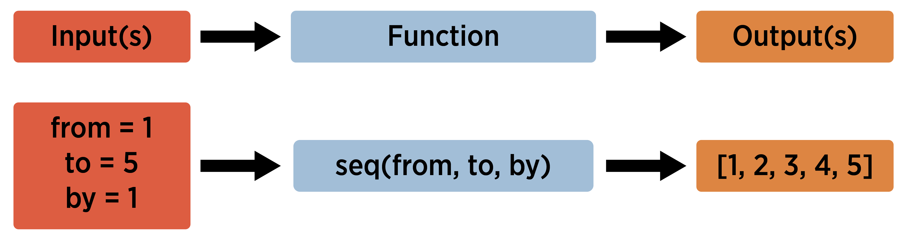
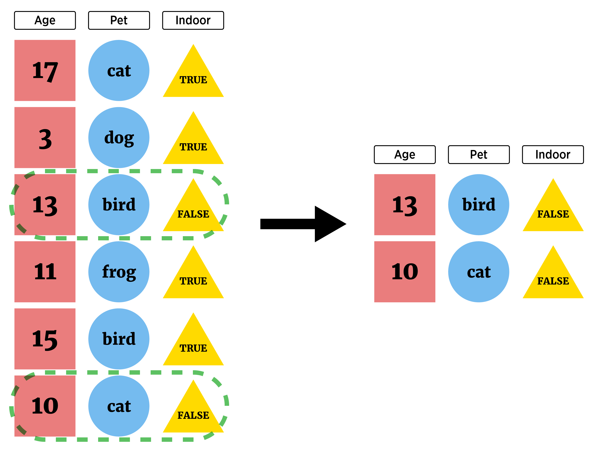
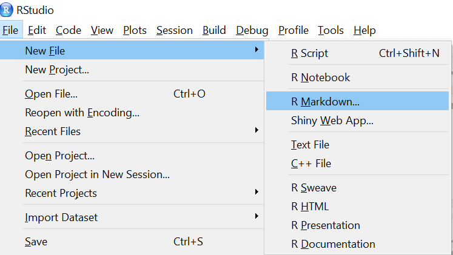
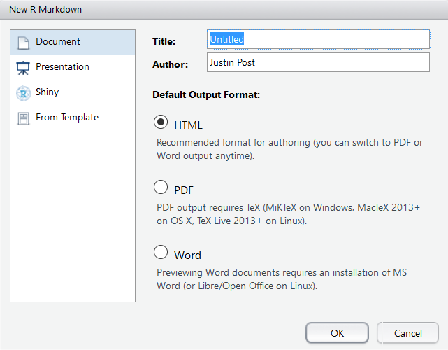

Statistical Methods
2020-04-15
Chapter 1 Introduction
1.1 About the book
The goal in creating this book is to provide a thorough treatment of applied statistical methodologies geared toward analyzing designed experiments. Our approach emphasizes the problems researchers encounter rather than providing a litany of solutions with only modest context. We discuss a real scientific problem, thoughtfully consider the data that could be used to answer that problem, investigate experimental designs that would be useful, and pursue statistical models to make informed decisions in the context of how the data was collected. The focus of the book is on the statistical modeling portion but problems are viewed holistically. We purposefully introduce the linear model framework in matrix form early on and place most of the methodologies under that umbrella. This helps the reader to see the methods as a part of a general framework as opposed to a set of tools within a toolbox. We believe that the book should be appropriate for a graduate level student that has some comfort in mathematics, particularly linear algebra. Both SAS and R are used throughout to make sure the book works for a wide audience of practitioners.
1.2 Software
At this point, software is a requirement for statistics in practice. There are many available software solutions ranging from point and click to full on programming. We’ve decided to focus on R and SAS for this book.
R is an open source, platform agnostic, software that is widely used by statisticians. We’ll use the RStudio interactive development environment to write and execute our R code.
SAS is an extremely powerful and widely used software for modelling and analysis. It requires a license, but for those without one, SAS University Edition can be installed for free and is also platform agnostic. We’ll use the SAS Studio environment that comes with University Edition.
As we progress through the book we’ll include graphs, descriptive statistics, and analyses from R and/or SAS. At the end of each chapter a section explaining how to create these in both R and SAS is included. The following sections give a brief introduction to each software that should prepare you for what’s ahead!
You’ll also notice a certain style to the way our code is written. Good programming practices (GPPs) are essential for improving productivity and collaborating with others - including future you! There are a lot of guidelines and resources about GPPs available. We’ll cover just a few of the essentials here.
Include a header at the top of the program that gives the author, date, and purpose of the program.
Place comments throughout the program explaining the purpose of different chunks of code as well as your thought process.
Spacing and indentation should be used throughout for readability of the program.
Group sections of your code that serve a certain purpose together.
Use a consistent naming scheme such as camelCase or underscores_between_words.
Many of these and other GPPs can be taken care of by programming in a notebook environment such as JUPYTER (which can include SAS) or R Markdown. Also using a version control software such as Git and Github is really useful!
1.3 R
The general workflow for programming in R involves taking raw data and importing it into R. Once that data is imported we often create numerical and graphical summaries of the data. An appropriate model and statistical methods are then applied.

At the end of this section the reader should be able to do the following:
- install R and RStudio
- read and write basic R programs
- import well-formatted data into R
- do basic data manipulation in R
As the book progresses the steps of summarizing and analyzing the data will be covered. Let’s get started!
1.3.1 Installing R and RStudio
The R software itself can be downloaded and installed by visiting the Comprehensive R Archive Network (Cran) website. Here there are links to install R for Linux, Mac, and Windows-based machines.
For Windows users, follow the initial ‘Download R for Windows’ link and then click ‘install R for the first time.’ From here you should now see a Download R X.x.x for Windows link that will download a .exe file. Once downloaded run that file and follow the prompts.
For Mac users, follow the initial ‘Download R for (Mac) OS X’ link and click on the link near the ‘Latest Release’ section similar to R-x.x.x.pkg. Once downloaded, you should be able to install by double clicking on the file.
For Linux users, follow the initial ‘Download R for Linux’ link. Choose your OS and instructions are given on how to download R.
Once you’ve installed R you’ll want to install RStudio. RStudio is a well-developed environment that makes programming in R much easier! To download head to RStudio’s download page. From here choose RStudio Desktop (Open Source License) and a page with appropriate links to install are provided.
1.3.2 Using RStudio
To program in R you’ll want to open RStudio. RStudio will submit R code for you so you never actually need to open R itself.
There are four main ‘areas’ of the RStudio IDE:
Console (& Terminal)
Scripting and Viewing Window
Plots/Help (& Files/Packages)
Environment (& Connections/Git)
You may wish to rearrange the panes. This can be done via the menus at the top. Choose “Tools –> Global Options”.

Other useful global options to change are under the appearance tab (font size, theme) and under the code tab (editing –> soft-wrap, display –> show whitespace).
1.3.2.1 Console
To evaluate code you can type directly into the console.
## [1] 10## [1] 200.8554## [1] 2.28946## [1] 15.4In the R sections of the book we spend much of our time learning the R syntax needed to create the appropriate summaries or analysis.
1.3.2.2 Scripting and Viewing Window
Usually you don’t want to type code directly into the console because there isn’t an easy way to get the code for later use. Instead code is usually written in an R ‘script’ which is then saved.
From an R script you can send code to console via:
“Run” button (runs current line)
CTRL+Enter (PC and Linux) or Command+Enter (MAC)
Highlight section and do above
To create a new R script you can use the menus at the top and go to File –> New File –> R Script. Take a moment and do this! Type the following into your script:
View(cars)(note capitalV)plot(cars)
Submit it to the console using a button or hot key!
1.3.2.3 Plots/Help
Created plots are stored in the Plots tab. This is a nice feature that allows you to cycle through past plots and easily save plots via menus.
In this pane there is also a Help tab that will enable you to learn about R functions. In the console type help(hist) for instance. Information about the hist function is presented. Being able to parse these types of help files is a really useful skill!
For every R function there are a few sections:
Description - What the function is intended for.
Usage - How to call the function, inputs required, and which inputs have default arguments.
- Here we see
hist(x, ...). This implies there is only one required input,x, and there is no default. The ellipsis(...)is an important tool that gives a function (say A) that calls another function (say B) the flexibility to supply arguments specific to function B when calling function A. We’ll learn more about this in later chapters.
- Below you see a more detailed call to
histthat includes other inputs. Each of these inputs has an equal sign with a value after it. This is the default value for that input (since there is a default value you don’t have to specify it when you call). For instance, thebreaks = "Sturges"input implies that the “Sturges” method is the default for determining how the bins of the histogram are created.
- Here we see
Arguments - Describes the input requirements in more detail.
Details - Information about how the function works.
Values - Information about what is returned to the user.
References
See Also - Related functions.
Examples - Highly useful section giving code you can copy and paste to see an example of how the function can be used.
1.3.2.4 Environment
R stores data/info/functions/etc. in R objects. An object is a data structure having attributes and methods (more on this shortly). You can create an R object via <- (recommended) or =.
## [1] 6## [1] "Hello there!" "How are you?"Notice that when you send the line avg <- (5+ 7 + 6) / 3 to the console (i.e. create the object avg) that nothing prints out. This is common behavior when storing the object. The output or information is saved for later use in the object. To see the output or information you then simply call the object (a default printing method is used to display it).
You can look at all current objects with ls().
## [1] "avg" "words"Use rm() to remove an object.
## [1] "words"Built-in objects exist like letters and cars.
## [1] "a" "b" "c" "d" "e" "f" "g" "h" "i" "j" "k" "l" "m" "n" "o" "p" "q" "r" "s"
## [20] "t" "u" "v" "w" "x" "y" "z"## speed dist
## 1 4 2
## 2 4 10
## 3 7 4The function data() shows available built-in datasets.
You should now be roughly familiar with the four main ‘areas’ of the RStudio IDE:
Console (& Terminal)
Scripting and Viewing Window
Plots/Help (& Files/Packages)
Environment (& Connections/Git)
1.3.3 R Objects and Classes
R has strong Object Oriented Programming (OOP) tools.
Object: data structure with attributes (class)
Method: procedures (functions) that act on object based on attributes
R functions like print() or plot() act differently depending on an object’s class.
## [1] "data.frame"
## [1] "function"Many R functions exist to help understand an R Object.
str()(structure)
## 'data.frame': 50 obs. of 2 variables:
## $ speed: num 4 4 7 7 8 9 10 10 10 11 ...
## $ dist : num 2 10 4 22 16 10 18 26 34 17 ...class()
## [1] "data.frame"typeof()
## [1] "list"We’ll use these functions later to help us know how to extract information from an R object.
Recall that we can create an R object via <- (recommended) or =. This allocates computer memory to the object. The object’s attributes depend on how you created it.
## [1] "numeric"## [1] "lm"1.3.4 Data Objects
To understand how to use R for data analysis we need to understand commonly used data structures:
- Atomic Vector (1D)
- Matrix (2D)
- Array (nd) (not covered)
- Data Frame (2D)
- List (1D)
1.3.4.1 Atomic Vector
Let’s start with the most basic object and work our way up. An atomic vector is a 1D group of elements with an ordering. Two examples of atomic vectors are given below:

All of the elements must be same ‘type’. Types include numeric (integer or double), character, or logical. We create an atomic vector with the c() function (‘combine’).
## [1] 17 22 1 3 -3## [1] "cat" "dog" "bird" "frog"In addition, many ‘functions’ output a numeric vector. Functions are at the heart of R so it is vital to understand them. The concept of a function is that the function takes an input or inputs and maps those inputs to some output(s).

As an example, one function that outputs a numeric vector is the seq or sequence function. To know about a function you need to know about the inputs and ouputs. For seq we have the following:
+ Inputs = from, to, by (among others)
+ Output = a sequence of numbers
## [1] 1 2 3 4 5## num [1:5] 1 2 3 4 5str tells about the object v:
numsays it is numeric[1:5]implies one dimensional with elements 1, 2, 3, 4, 5
If the order of the function arguments is known, they do not need to be named when invoking the function as R uses positional matching to determine the inputs. Also, if you name some arguments but not others, R will use positional matching for the remaining inputs. For example, the calls below are all equivalent:
The seq function is used quite a bit. There is a shorthand way to create an integer sequence using :.
## [1] 1 2 3 4 5 6 7 8 9 10 11 12 13 14 15 16 17 18 19 20It is also important to know how R does math on its objects. R does elementwise addition/subtraction and multiplication/division to vectors, matrices, and data frames. (The matrix multiplicaiton operator is %*%.).
## [1] 0.05 0.10 0.15 0.20 0.25 0.30 0.35 0.40 0.45 0.50 0.55 0.60 0.65 0.70 0.75
## [16] 0.80 0.85 0.90 0.95 1.00## [1] 2 3 4 5 6 7 8 9 10 11 12 13 14 15 16 17 18 19 20 21As we mentioned earlier, understanding help files is really critical to being able to program in R. As functions are ubiquitous in R we often need to learn about their inputs (or arguments) and we can do so using help.
To recap, our first commonly used R object for storing data is an atomic vector. This is a 1D group of elements with an ordering where all of the elements are of the same type. Generally vectors are useful to know about but not usually useful for a storing a dataset exactly. They can often be considered as the ‘building blocks’ for other data types.
1.3.4.2 Matrix
A Matrix is a 2D data structure in R whose elements are all of the same type. The first dimension refers to the rows and the second dimension refers to the columns. A 2D data object is very common. The rows often represent the observations and the columns represent the variables. Although not technically right, it is useful to think of the columns of a matrix as vectors of the same type and length.

For instance, consider the three vectors created here:
These are all of the same type. This can be checked with an is. (read as ‘is dot’) function.
## [1] TRUE## [1] TRUE## [1] TRUENot only are these three objects the same type but they are also the same length. This can be checked using the length function.
## [1] 4## [1] 4## [1] 4Again, it is useful to visualize the columns of a potential matrix as these vectors. We can create the matrix using the matrix function. The matrix function requires us to give the data as one vector. We can combine the x, y, and z objects into one vector using the c funciton. This is the first argument to the matrix function. The only other argument required is to either specify the number of rows (nrow =) or the number of columns (ncol =) (R will attempt to figure out the one that is not given using the total length of the specified data vector).
## [,1] [,2] [,3]
## [1,] 17 -3 1
## [2,] 3 -3 2
## [3,] 13 -3 3
## [4,] 11 -3 4A matrix can also store character data as well. An example of this is given below and the number of rows is specified rather than the number of columns. Note the use of is.character from the is. family of functions.
## [1] TRUE## [,1] [,2] [,3]
## [1,] "Hi" "a" "One"
## [2,] "There" "b" "Two"
## [3,] "!" "c" "Three"To recap, a Matrix is a 2D data structure where we can think of the columns as vectors of the same type and length. These are useful for some datasets but most datasets have some numeric and some character variables.
Another 2D object called a data frame is perfect for this type of data!
1.3.4.3 Data Frame
A Data Frame is a 2D data structure where elements within a column must be of the same type but the columns themselves can differ in type. When thinking of a data frame, consider them as a collection (list) of vectors of the same length.

A data frame can be created with the data.frame function.
## x y z
## 1 a 1 10
## 2 b 3 11
## 3 c 4 12
## 4 d -1 13
## 5 e 5 14
## 6 f 6 15You can also easily name the columns during creation.
## char data1 data2
## 1 a 1 10
## 2 b 3 11
## 3 c 4 12
## 4 d -1 13
## 5 e 5 14
## 6 f 6 15Notice that char, data1, and data2 become the variable names for the data frame.
To recap, consider a data frame as a collection (list) of vectors of the same length. Tis type of data structure is perfect for most data sets! Most functions that read 2D data into R store it as a data frame.
1.3.4.4 List
A List is a 1D group of objects with ordering. Really it is a vector that can have differing elements. Think of this in a similar way to the atomic vector previously discussed except the elements are really flexible.

A list can be created with the list function. You specify the elements you want to include, separated by commas.
## [[1]]
## [1] 1 2 3
##
## [[2]]
## [1] 0.4899896 -2.2668136
##
## [[3]]
## [1] "!" "?"Similar to a data frame, you can add names to the list elements during creation.
## $seq
## [1] 1 2 3
##
## $normVals
## [1] -0.3953431 -1.1120228
##
## $punctuation
## [1] "!" "?"To recap, a list is a very flexible 1D object. It is really useful for more complex types of data.
The table below gives a summary of the data objects we’ve covered. For most data analysis you’ll use data frames.
| Dimension | Homogeneous | Heterogeneous |
|---|---|---|
| 1d | Atomic Vector | List |
| 2d | Matrix | Data Frame |
Next we look at how to access or change parts of these common data objects.
1.3.5 Accessing Common Data Objects
When we are dealing with a data object (1D or 2D) we may want to extract a single element, certain columns, or certain rows. In this section we’ll look at how to subset or extract information from each of the common data objects covered in the previous section.
1.3.5.1 Atomic Vector (1D)
For atomic vectors (and lists, see later) you can return elements using square brackets []. You may notice that when R prints a vector to the console you often see [1] next to the first element and perhaps a [#] where R has to break and move to the next line of the console. The [1] implies the element printed next is the first element of the vector (R starts its counting at 1 not 0 like some other languages). The [#] implies that the element printed to the right is the # element of the vector. This is a good reminder of how to extract values from an atomic vector.
As an example, here we extract from a built-in R object called letters that is a vector of length 26 containing the letters of the alphabet.
## [1] "a" "b" "c" "d" "e" "f" "g" "h" "i" "j" "k" "l" "m" "n" "o" "p" "q" "r" "s"
## [20] "t" "u" "v" "w" "x" "y" "z"## [1] "a"## [1] "z"To obtain more than one element you can ‘feed’ in a vector of indices to that you’d like to return.
## [1] "a" "b" "c" "d"## [1] "e" "j" "o" "t" "y"## [1] "a" "b" "e"If you’d like to return all values except a certain subset, you can use negative indices.
## [1] "e" "f" "g" "h" "i" "j" "k" "l" "m" "n" "o" "p" "q" "r" "s" "t" "u" "v" "w"
## [20] "x" "y" "z"## [1] "c" "d" "f" "g" "h" "i" "j" "k" "l" "m" "n" "o" "p" "q" "r" "s" "t" "u" "v"
## [20] "w" "x" "y" "z"1.3.5.2 Matrices (2D)
For rectangular data like a matrix you can return rectangular subsets using square brackets with a comma [ , ]. Notice default row and column names when R prints a matrix!
## [,1] [,2]
## [1,] 1 20
## [2,] 2 19
## [3,] 3 18
## [4,] 4 17This is a nice reminder of how to index a matrix. The value prior to the columns represents which row(s) you want to return and the value after the comma which column(s). If an index is left blank then all of that corresponding dimension (row or column) is returned.
## [,1] [,2]
## [1,] 2 19
## [2,] 4 17## [1] 1 2 3 4## [1] 2 19## [1] 2Notice that R simplifies the result where possible. That is, returns an atomic vector if you have only 1 dimension and a matrix if two. This can be changed by adding an additional argument to the [ function.
## [,1]
## [1,] 1
## [2,] 2
## [3,] 3
## [4,] 4Also, if you only give a single value in the [] then R uses the count of the value in the matrix. Counts go down columns first.
## [1] 20If your matrix has column names associated with it, you can also use those to return columns of interest. To add column names we can look run help(matrix) to learn how! Notice the dimnames argument. You can specify names for the rows and columns by using a list with two vectors. The first vector indicating row names and the second column names. If we don’t want to give row names we can give a NULL (a special value in R that is used for undefined values - here giving no specification of row names). We can do this and give a character vector for the column names.
## First Second
## [1,] 1 20
## [2,] 2 19
## [3,] 3 18
## [4,] 4 17Now we can request columns be using a single name or a character vector of names.
## [1] 1 2 3 4To return all but certain parts of a matrix you can still use negative indices but note that this won’t work with column names.
## Error in -"First": invalid argument to unary operator## [1] 2 41.3.5.3 Data Frames (2D)
Since a data frame is also a rectangular data object you can return rectangular subsets using square brackets with a comma [ , ]!
As an example, we’ll subset the built-in iris data frame. To get an idea about this object we can run str(iris).
## 'data.frame': 150 obs. of 5 variables:
## $ Sepal.Length: num 5.1 4.9 4.7 4.6 5 5.4 4.6 5 4.4 4.9 ...
## $ Sepal.Width : num 3.5 3 3.2 3.1 3.6 3.9 3.4 3.4 2.9 3.1 ...
## $ Petal.Length: num 1.4 1.4 1.3 1.5 1.4 1.7 1.4 1.5 1.4 1.5 ...
## $ Petal.Width : num 0.2 0.2 0.2 0.2 0.2 0.4 0.3 0.2 0.2 0.1 ...
## $ Species : Factor w/ 3 levels "setosa","versicolor",..: 1 1 1 1 1 1 1 1 1 1 ...We can see this is a data frame with a few columns, four are numeric and one is a factor (a special type of character vector essentially - these will be covered when we discuss plotting).
## Sepal.Width Petal.Length Petal.Width
## 1 3.5 1.4 0.2
## 2 3.0 1.4 0.2
## 3 3.2 1.3 0.2
## 4 3.1 1.5 0.2## Sepal.Length Sepal.Width Petal.Length Petal.Width Species
## 1 5.1 3.5 1.4 0.2 setosa## [1] 5.1 4.9 4.7 4.6 5.0 5.4 4.6 5.0 4.4 4.9 5.4 4.8 4.8 4.3 5.8 5.7 5.4 5.1
## [19] 5.7 5.1 5.4 5.1 4.6 5.1 4.8 5.0 5.0 5.2 5.2 4.7 4.8 5.4 5.2 5.5 4.9 5.0
## [37] 5.5 4.9 4.4 5.1 5.0 4.5 4.4 5.0 5.1 4.8 5.1 4.6 5.3 5.0 7.0 6.4 6.9 5.5
## [55] 6.5 5.7 6.3 4.9 6.6 5.2 5.0 5.9 6.0 6.1 5.6 6.7 5.6 5.8 6.2 5.6 5.9 6.1
## [73] 6.3 6.1 6.4 6.6 6.8 6.7 6.0 5.7 5.5 5.5 5.8 6.0 5.4 6.0 6.7 6.3 5.6 5.5
## [91] 5.5 6.1 5.8 5.0 5.6 5.7 5.7 6.2 5.1 5.7
## [ reached getOption("max.print") -- omitted 50 entries ]Notice the simplification done when a single column is selected. R will simplify to a vector unless drop = FALSE is included as done in the matrix section. (The simplification doesn’t occur when a single row is selected because data frames are actually lists - we’ll discuss this more in the list section!)
You can use columns names to subset as well.
## Sepal.Length Species
## 1 5.1 setosa
## 2 4.9 setosa
## 3 4.7 setosa
## 4 4.6 setosa
## 5 5.0 setosa
## 6 5.4 setosa
## 7 4.6 setosa
## 8 5.0 setosa
## 9 4.4 setosa
## 10 4.9 setosaThe most common way to access a single column is to use the dollar sign operator.
## [1] 5.1 4.9 4.7 4.6 5.0 5.4 4.6 5.0 4.4 4.9 5.4 4.8 4.8 4.3 5.8 5.7 5.4 5.1
## [19] 5.7 5.1 5.4 5.1 4.6 5.1 4.8 5.0 5.0 5.2 5.2 4.7 4.8 5.4 5.2 5.5 4.9 5.0
## [37] 5.5 4.9 4.4 5.1 5.0 4.5 4.4 5.0 5.1 4.8 5.1 4.6 5.3 5.0 7.0 6.4 6.9 5.5
## [55] 6.5 5.7 6.3 4.9 6.6 5.2 5.0 5.9 6.0 6.1 5.6 6.7 5.6 5.8 6.2 5.6 5.9 6.1
## [73] 6.3 6.1 6.4 6.6 6.8 6.7 6.0 5.7 5.5 5.5 5.8 6.0 5.4 6.0 6.7 6.3 5.6 5.5
## [91] 5.5 6.1 5.8 5.0 5.6 5.7 5.7 6.2 5.1 5.7
## [ reached getOption("max.print") -- omitted 50 entries ]A nice benefit of using RStudio is that column names will be filled in automatically as you type. In your console do the following:
- Type
iris$
- If no choices - hit tab
- Scroll up and down or continue typing to highlight the column of interest
- Hit tab again to choose
1.3.5.4 Lists (1D)
As a list is a 1D data object we can use single square brackets [ ] for multiple list elements.
## [[1]]
## [1] "HI"
##
## [[2]]
## [1] 10 11 12 13 14 15 16 17 18 19 20
##
## [[3]]
## [1] 1## [[1]]
## [1] 10 11 12 13 14 15 16 17 18 19 20
##
## [[2]]
## [1] 1We can use double square brackets [[ ]] (or [ ]) to return a single list element. The major difference is in whether or not a list with the element chosen is returned or just the element itself. [[ will return just the element requested.
## [[1]]
## [1] "HI"## [1] "HI"## [1] 10 11 12 13 14 15 16 17 18 19 20## [1] 13 14Recall we could name our list elements. If they are named we can use the $ similar to a data frame.
## List of 3
## $ : chr "HI"
## $ : int [1:11] 10 11 12 13 14 15 16 17 18 19 ...
## $ : num 1## [1] 10 11 12 13 14 15 16 17 18 19 20Under the hood a data frame is just a list of equal length vectors!
## List of 3
## $ First : chr "Hi"
## $ Second: int [1:11] 10 11 12 13 14 15 16 17 18 19 ...
## $ Third : num 1## 'data.frame': 150 obs. of 5 variables:
## $ Sepal.Length: num 5.1 4.9 4.7 4.6 5 5.4 4.6 5 4.4 4.9 ...
## $ Sepal.Width : num 3.5 3 3.2 3.1 3.6 3.9 3.4 3.4 2.9 3.1 ...
## $ Petal.Length: num 1.4 1.4 1.3 1.5 1.4 1.7 1.4 1.5 1.4 1.5 ...
## $ Petal.Width : num 0.2 0.2 0.2 0.2 0.2 0.4 0.3 0.2 0.2 0.1 ...
## $ Species : Factor w/ 3 levels "setosa","versicolor",..: 1 1 1 1 1 1 1 1 1 1 ...## [1] "list"## [1] "list"This means we can index a data frame in a similar way to how we index a list if we want.
## [1] 3.5 3.0 3.2 3.1 3.6 3.9 3.4 3.4 2.9 3.1 3.7 3.4 3.0 3.0 4.0 4.4 3.9 3.5
## [19] 3.8 3.8 3.4 3.7 3.6 3.3 3.4 3.0 3.4 3.5 3.4 3.2 3.1 3.4 4.1 4.2 3.1 3.2
## [37] 3.5 3.6 3.0 3.4 3.5 2.3 3.2 3.5 3.8 3.0 3.8 3.2 3.7 3.3 3.2 3.2 3.1 2.3
## [55] 2.8 2.8 3.3 2.4 2.9 2.7 2.0 3.0 2.2 2.9 2.9 3.1 3.0 2.7 2.2 2.5 3.2 2.8
## [73] 2.5 2.8 2.9 3.0 2.8 3.0 2.9 2.6 2.4 2.4 2.7 2.7 3.0 3.4 3.1 2.3 3.0 2.5
## [91] 2.6 3.0 2.6 2.3 2.7 3.0 2.9 2.9 2.5 2.8
## [ reached getOption("max.print") -- omitted 50 entries ]Lastly, one nice thing about lists (and data frames) is that you can use partial matching with [[ and $. That is, you don’t need to specify the full column name as long as you’ve specified enough characters as to be clear which column you are referring to.
## [1] setosa setosa setosa setosa setosa setosa setosa setosa setosa setosa
## Levels: setosa versicolor virginica## [1] 1.4 1.4 1.3 1.5 1.4 1.7 1.4 1.5 1.4 1.5 1.5 1.6 1.4 1.1 1.2 1.5 1.3 1.4
## [19] 1.7 1.5 1.7 1.5 1.0 1.7 1.9 1.6 1.6 1.5 1.4 1.6 1.6 1.5 1.5 1.4 1.5 1.2
## [37] 1.3 1.4 1.3 1.5 1.3 1.3 1.3 1.6 1.9 1.4 1.6 1.4 1.5 1.4 4.7 4.5 4.9 4.0
## [55] 4.6 4.5 4.7 3.3 4.6 3.9 3.5 4.2 4.0 4.7 3.6 4.4 4.5 4.1 4.5 3.9 4.8 4.0
## [73] 4.9 4.7 4.3 4.4 4.8 5.0 4.5 3.5 3.8 3.7 3.9 5.1 4.5 4.5 4.7 4.4 4.1 4.0
## [91] 4.4 4.6 4.0 3.3 4.2 4.2 4.2 4.3 3.0 4.1
## [ reached getOption("max.print") -- omitted 50 entries ]This is less important now that RStudio can auto-complete long column names.
1.3.6 Basics of R Recap
RStudio IDE (Integrated Development Environment)
R Objects and Classes
Data Objects & Basic Manipulation
| Dimension | Homogeneous | Heterogeneous |
|---|---|---|
| 1d | Atomic Vector | List |
| 2d | Matrix | Data Frame |
Basic access via
Atomic vectors -
x[ ]Matrices -
x[ , ]Data Frames -
x[ , ]orx$nameLists -
x[ ],x[[ ]], orx$name
1.3.7 Reading Data Basics
When it comes to reading in data, where do we start? Our plan for this section is as follows:
Look at common raw data formats
Take a few quick asides: R projects,
factors, and R packagesRead ‘clean’ delimited data
Read Excel, SAS, & SPSS data
Resources for JSON data, XML data, databases, and APIs
How to read in data depends on raw/external data type!
We’ll start by focusing on delimited data.
- Delimiter - Character (such as a
,) that separates data entries

To read in data we’ll need functions to do so. When you open R a few packages are loaded.

R Packages:
Collection of functions/datasets/etc. in one place
Packages exist to do almost anything
List of CRAN approved packages on R’s website
Plenty of other packages on places like GitHub
The utils package that automatically loads has a family of read. functions ready for use! Reading data with these functions is often referred to as reading with a standard R or base R method.
Function and purpose:
| Type of Delimeter | Function |
|---|---|
| Comma | read.csv() |
Semicolon (, for decimal) |
read.csv2() |
| Tab | read.delim() |
| White Space/General | read.table(sep = "") |
Each of these functions requires a path to the file in order to read it in. Let’s read in the ‘neuralgia.csv’ file. This is a comma separated value file (.csv). This requires the read.csv function.
R locates the file by the path you give it. You can give full path name. For example,
- ex: C:/Users/jbpost2/repos/StatisticalMethods/datasets/neuralgia.csv
- ex: C:\\Users\\jbpost2\\repos\\StatisticalMethods\\datasets\\neuralgia.csv

Notice that a double \ is needed because \ is an escape character in R so \\ is really read as \.
Ok, let’s read in the neuralgia csv file using read.csv.
## Treatment Sex Age Duration Pain
## 1 P F 68 1 No
## 2 B M 74 16 No
## 3 P F 67 30 No
## 4 P M 66 26 Yes
## 5 B F 67 28 No
## 6 B F 77 16 NoPretty simple if the data is nicely formatted! Using a full local path is not recommended though! Doing so makes it difficult to share code without having to go in and change the paths. Instead, you can change the working directory R is using. That is, the folder by default R is ‘looking’ for files. Then we can supply a relative path. As long as other users have the same folder structure as you (say if you are using a github repo), no changes need to be made for them to run the code!
We can determine the working directory using getwd.
## [1] "C:/Users/jbpost2/repos/StatisticalMethods/software/R"This can be changed using setwd.
setwd("C:/Users/jbpost2/repos/StatisticalMethods/datasets")
#or
setwd("C:\\Users\\jbpost2\\repos\\StatisticalMethods\\datasets")The working directory can also be changed via the menus in RStudio.

Another way to supply a path is via a URL. This is really handy if you have a place to host your datasets!
To recap, to read a csv file you can
Use full local path (not recommended)
Use relative path
- set working directory with
setwd()
- set working directory with
Pull from a URL
1.3.8 Quick Aside: RStudio Project
Often we have many files associated with an analysis. When working on multiple undertakings things get cluttered in R… With each analysis we may want to associate different
+ environments
+ histories
+ working directories
+ source documents. The “Project” feature in R Studio allows us to easily do this! To create you can use the drop down menus.

Now you can easily switch between analyses by using “File –> Open Project” or by using the little drop down menu in the top right of RStudio.
1.3.9 Quick Aside: Factors
As mentioned above there are read. functions for many different types of delimited data. These functions work really well but there are a few areas they could be improved.
- A poor default function behavior as strings are read as
factors
Understanding factors is important enough to warrant a quick discussion. Let’s look at the structure of our neuralgiaData object we read in with read.csv.
## 'data.frame': 60 obs. of 5 variables:
## $ Treatment: Factor w/ 3 levels "A","B","P": 3 2 3 3 2 2 1 2 2 1 ...
## $ Sex : Factor w/ 2 levels "F","M": 1 2 1 2 1 1 1 1 1 2 ...
## $ Age : int 68 74 67 66 67 77 71 72 76 71 ...
## $ Duration : int 1 16 30 26 28 16 12 50 9 17 ...
## $ Pain : Factor w/ 2 levels "No","Yes": 1 1 1 2 1 1 1 1 2 2 ...We can see that all of the character variables are Factor vectors. A factor is a special class of vector with a levels attribute. The levels define all possible values for that variable. This is a great concept for a variable that can only take on certain values such as Day (Monday, Tuesday, …, Sunday). However, if you have a variable like Name that you will eventually add new values (levels) to factors become a bit of a nuisance.
For example, in the neuralgia dataset we may have a fourth treatment we want to add to the Treatment variable. Let’s try to assign the first observation value with a ‘new’ treatment called ‘M’.
## [1] P B P P B B A B B A A A B A P A P A P B B A A A B P B B P P A A B B B A P B
## [39] B P P P A B A P P A B P P P B A P A P A B A
## Levels: A B P## Warning in `[<-.factor`(`*tmp*`, 1, value = structure(c(NA, 2L, 3L, 3L, :
## invalid factor level, NA generatedWe can see this throws an error because ‘M’ is not one of the levels defined for the variable. To add the new value we have to alter the levels attribute of the factor.
#overwrite with another possible level
levels(neuralgiaData$Treatment) <- c(levels(neuralgiaData$Treatment), "M")
levels(neuralgiaData$Treatment)## [1] "A" "B" "P" "M"Factors are very useful for plotting as we’ll see later.
For the other issues with the read. family we can look at useful functions from other R packages. R packages deserve a brief discussion as well!
1.3.10 Quick Aside: R Packages
An R package is a collection of functions in one place. There are tons of packages to do most anything. In particular a group of packages called the “TidyVerse” has modernized the use of R for a larger audience. The tidyverse is a package that is a collection of eight R packages that share common philosophies and are designed to work together! One of these packages, readr, is extremely useful for reading in data and remedies the concerns mentioned above about the read. family of functions.
The first time using a package you must ‘install’ the package (download the files). You can do this
- Using code:
install.packages("tidyverse")
#can do multiple packages at once
install.packages(c("readr", "readxl", "haven", "DBI", "httr"))- Using menus:

Note that you can also install packages from local sources (such as a downloaded .zip or .tar) but that isn’t usually required unless you are behind a firewall or R updates and the packages haven’t been updated for that version of R.
The good thing is that you only need to install the packages once! However, this doesn’t mean you have direct access to your package functions or datasets in your R session. Each R session you open you need to read in the package using library() or require().
## Warning: package 'readr' was built under R version 3.6.2## Loading required package: haven## Warning: package 'haven' was built under R version 3.6.2These functions are very similar; they both give you direct access to the functions or data in your R session. The difference is that if you try to load a package that doesn’t exist library throws an error where require() returns FALSE.
## Error in library("notAPackage"): there is no package called 'notAPackage'## Loading required package: notAPackage## Warning in library(package, lib.loc = lib.loc, character.only = TRUE,
## logical.return = TRUE, : there is no package called 'notAPackage'Now is a good time to install the tidyverse package if you haven’t already.
The functions in the tidyverse generally have
Fast code
Easy syntax
Good default settings on functions
A nice set of examples and vignettes
Read the package into your R session.
## Warning: package 'tidyverse' was built under R version 3.6.2## -- Attaching packages --------## v ggplot2 3.2.1 v dplyr 0.8.3
## v tibble 2.1.3 v stringr 1.4.0
## v tidyr 1.0.0 v forcats 0.4.0
## v purrr 0.3.3## Warning: package 'ggplot2' was built under R version 3.6.2## Warning: package 'tibble' was built under R version 3.6.2## Warning: package 'tidyr' was built under R version 3.6.2## Warning: package 'purrr' was built under R version 3.6.2## Warning: package 'dplyr' was built under R version 3.6.2## Warning: package 'stringr' was built under R version 3.6.2## Warning: package 'forcats' was built under R version 3.6.2## -- Conflicts -----------------
## x dplyr::filter() masks stats::filter()
## x dplyr::lag() masks stats::lag()You’ll likely see a message about functions being masked. This implies that one of the functions just loaded has a function under the same name as a function that already exists. If you type help(filter), R will now give you an option of which filter to look at. R uses the most recently loaded function and “masks” the old ones. You can access specific package’s functions using ::. This allows you to call functions without loading a full library.
## Parsed with column specification:
## cols(
## Treatment = col_character(),
## Sex = col_character(),
## Age = col_double(),
## Duration = col_double(),
## Pain = col_character()
## )## # A tibble: 60 x 5
## Treatment Sex Age Duration Pain
## <chr> <chr> <dbl> <dbl> <chr>
## 1 P F 68 1 No
## 2 B M 74 16 No
## 3 P F 67 30 No
## 4 P M 66 26 Yes
## 5 B F 67 28 No
## # ... with 55 more rows1.3.11 Reading Delimited Data
Again the read. functions exist to read in many different types of delimited data. These functions work really well but there are a few areas they could be improved.
A poor default function behavior as strings are read as
factorsRaw data row & column names can be troublesome
Slow processing (relatively speaking)
(Slightly) different behavior on different computers
Functions from the tidyverse (and readr in particular) remedy all of these!
| Type of Delimeter | utils Function |
readr |
|---|---|---|
| Comma | read.csv() |
read_csv() |
Semicolon (, for decimal) |
read.csv2() |
read_csv2() |
| Tab | read.delim() |
read_tsv() |
| General | read.table(sep = "") |
read_delim() |
| White Space | read.table(sep = "") |
read_table() read_table2() |
Let’s reread the ‘neuralgia.csv’ file using read_csv from the readr package.
## Parsed with column specification:
## cols(
## Treatment = col_character(),
## Sex = col_character(),
## Age = col_double(),
## Duration = col_double(),
## Pain = col_character()
## )You can see that the package displays a bit of information about how the data was parsed.
## # A tibble: 60 x 5
## Treatment Sex Age Duration Pain
## <chr> <chr> <dbl> <dbl> <chr>
## 1 P F 68 1 No
## 2 B M 74 16 No
## 3 P F 67 30 No
## 4 P M 66 26 Yes
## 5 B F 67 28 No
## # ... with 55 more rowsYou’ll also notice the fancy printing. This gives a quick check for the column type you have, which is a basic data validation step. The tidyverse has a special class of data frames called tibbles.
## [1] "spec_tbl_df" "tbl_df" "tbl" "data.frame"The behavior of tibbles is slightly different than that of a standard data frame. One is the printing method. The other major difference is that tibbles don’t simplify.
## # A tibble: 60 x 1
## Treatment
## <chr>
## 1 P
## 2 B
## 3 P
## 4 P
## 5 B
## # ... with 55 more rows## [1] "P" "B" "P" "P" "B" "B" "A" "B" "B" "A" "A" "A" "B" "A" "P" "A" "P" "A" "P"
## [20] "B" "B" "A" "A" "A" "B" "P" "B" "B" "P" "P" "A" "A" "B" "B" "B" "A" "P" "B"
## [39] "B" "P" "P" "P" "A" "B" "A" "P" "P" "A" "B" "P" "P" "P" "B" "A" "P" "A" "P"
## [58] "A" "B" "A"As this behavior can cause some issues with functions that are expecting a vector it is useful to force simplification sometimes. You can either use the pull function or the $ operator to return a column as a vector.
## [1] "P" "B" "P" "P" "B" "B" "A" "B" "B" "A" "A" "A" "B" "A" "P" "A" "P" "A" "P"
## [20] "B" "B" "A" "A" "A" "B" "P" "B" "B" "P" "P" "A" "A" "B" "B" "B" "A" "P" "B"
## [39] "B" "P" "P" "P" "A" "B" "A" "P" "P" "A" "B" "P" "P" "P" "B" "A" "P" "A" "P"
## [58] "A" "B" "A"## [1] "P" "B" "P" "P" "B" "B" "A" "B" "B" "A" "A" "A" "B" "A" "P" "A" "P" "A" "P"
## [20] "B" "B" "A" "A" "A" "B" "P" "B" "B" "P" "P" "A" "A" "B" "B" "B" "A" "P" "B"
## [39] "B" "P" "P" "P" "A" "B" "A" "P" "P" "A" "B" "P" "P" "P" "B" "A" "P" "A" "P"
## [58] "A" "B" "A"One question you may have about the column types is, how did R determine the column types? The help file for read_csv tells us that it checks the first 1000 rows of data and uses those to figure out the type of data. You can of course override this default behavior.
Some useful inputs you may want to change when reading in data are
skip = 0col_names = TRUEna = c("", "NA")
These allow you to skip lines of data, specify column names, and define what represents a missing value in the raw data (NA is the missing data indicator in R).
Generally, reading clean delimited data is pretty easy with the read_ family of functions! Let’s go through a few examples.
First, let’s read in the space delimited file ‘chemical.txt’. Since this is space delimited we’ll use read_table.
## Parsed with column specification:
## cols(
## `temp conc time percent` = col_character()
## )## # A tibble: 19 x 1
## `temp conc time percent`
## <chr>
## 1 -1 -1 -1 45.9
## 2 1 -1 -1 60.6
## 3 -1 1 -1 57.5
## 4 1 1 -1 58.6
## 5 -1 -1 1 53.3
## 6 1 -1 1 58
## 7 -1 1 1 58.8
## 8 1 1 1 52.4
## 9 -2 0 0 46.9
## 10 2 0 0 55.4
## 11 0 -2 0 55
## 12 0 2 0 57.5
## 13 0 0 -2 56.3
## 14 0 0 2 58.9
## 15 0 0 0 56.9
## 16 2 -3 0 61.1
## 17 2 -3 0 62.9
## 18 -1.4 2.6 0.7 60
## 19 -1.4 2.6 0.7 60.6Next, let’s read in the tab delimited file ‘crabs.txt’. Since this is tab delimited we’ll use read_tsv.
## Parsed with column specification:
## cols(
## color = col_double(),
## spine = col_double(),
## width = col_double(),
## satell = col_double(),
## weight = col_double(),
## y = col_double()
## )## # A tibble: 173 x 6
## color spine width satell weight y
## <dbl> <dbl> <dbl> <dbl> <dbl> <dbl>
## 1 3 3 28.3 8 3050 1
## 2 4 3 22.5 0 1550 0
## 3 2 1 26 9 2300 1
## 4 4 3 24.8 0 2100 0
## 5 4 3 26 4 2600 1
## # ... with 168 more rowsLastly, let’s read in the > delimited file ‘umps2012.txt’. As this isn’t a standard delimiter we’ll use read_delim and specify the delim = input. However, this file doesn’t contain column names in the raw data. The columns represent Year, Month, Day, Home, Away, and HPUmpire. The column names can be specified using the col_names input and specifying them with a character vector.
read_delim("https://www4.stat.ncsu.edu/~online/datasets/umps2012.txt", delim = ">",
col_names = c("Year", "Month", "Day", "Home", "Away", "HPUmpire"))## Parsed with column specification:
## cols(
## Year = col_double(),
## Month = col_double(),
## Day = col_double(),
## Home = col_character(),
## Away = col_character(),
## HPUmpire = col_character()
## )## # A tibble: 2,359 x 6
## Year Month Day Home Away HPUmpire
## <dbl> <dbl> <dbl> <chr> <chr> <chr>
## 1 2012 4 12 MIN LAA D.J. Reyburn
## 2 2012 4 12 SD ARI Marty Foster
## 3 2012 4 12 WSH CIN Mike Everitt
## 4 2012 4 12 PHI MIA Jeff Nelson
## 5 2012 4 12 CHC MIL Fieldin Culbreth
## # ... with 2,354 more rows1.3.11.1 Non-Standard Data
To read in tricky, non-standard data there are a few functions that can help.
read_file- reads an entire file into a single stringread_lines- reads a file into a character vector with one element per line
These are often parsed with regular expressions.
1.3.12 Excel data
Next we’ll cover reading data from Excel files (readxl package), SAS datasets (haven package), and SPSS files (haven package).
| Type of file | Package | Function |
|---|---|---|
| Delimited | readr |
read_csv(), read_tsv(),read_table(), read_delim() |
| Excel (.xls,.xlsx) | readxl |
read_excel() |
| SAS (.sas7bdat) | haven |
read_sas() |
| SPSS (.sav) | haven |
read_spss() |
Let’s read in the censusEd.xlsx file.This can be done with the read_excel() from readxl package! This funcion reads in both xls and xlsx files. It detects the format from the file extension given in the path name. One issue is that excel files cannot be read from the web so they do need to be downloaded locally.
## Warning: package 'readxl' was built under R version 3.6.2## # A tibble: 3,198 x 42
## Area_name STCOU EDU010187F EDU010187D EDU010187N1 EDU010187N2 EDU010188F
## <chr> <chr> <dbl> <dbl> <chr> <chr> <dbl>
## 1 UNITED S~ 00000 0 40024299 0000 0000 0
## 2 ALABAMA 01000 0 733735 0000 0000 0
## 3 Autauga,~ 01001 0 6829 0000 0000 0
## 4 Baldwin,~ 01003 0 16417 0000 0000 0
## 5 Barbour,~ 01005 0 5071 0000 0000 0
## # ... with 3,193 more rows, and 35 more variables: EDU010188D <dbl>,
## # EDU010188N1 <chr>, EDU010188N2 <chr>, EDU010189F <dbl>, EDU010189D <dbl>,
## # EDU010189N1 <chr>, EDU010189N2 <chr>, EDU010190F <dbl>, EDU010190D <dbl>,
## # EDU010190N1 <chr>, EDU010190N2 <chr>, EDU010191F <dbl>, EDU010191D <dbl>,
## # EDU010191N1 <chr>, EDU010191N2 <chr>, EDU010192F <dbl>, EDU010192D <dbl>,
## # EDU010192N1 <chr>, EDU010192N2 <chr>, EDU010193F <dbl>, EDU010193D <dbl>,
## # EDU010193N1 <chr>, EDU010193N2 <chr>, EDU010194F <dbl>, EDU010194D <dbl>,
## # EDU010194N1 <chr>, EDU010194N2 <chr>, EDU010195F <dbl>, EDU010195D <dbl>,
## # EDU010195N1 <chr>, EDU010195N2 <chr>, EDU010196F <dbl>, EDU010196D <dbl>,
## # EDU010196N1 <chr>, EDU010196N2 <chr>If you want to read in a sheet other than the first sheet, you can do so with the sheet = argument. To look at the available sheets without opening in Excel you can use the excel_sheets function.
## [1] "EDU01A" "EDU01B" "EDU01C" "EDU01D" "EDU01E" "EDU01F" "EDU01G" "EDU01H"
## [9] "EDU01I" "EDU01J"There are also ways to specify which cells to read in with the range = argument. You can select cells that are contiguous only (next to each other).
edData <- read_excel("../../datasets/censusEd.xlsx", sheet = "EDU01A",
range = cell_cols("A:D"))
edData## # A tibble: 3,198 x 4
## Area_name STCOU EDU010187F EDU010187D
## <chr> <chr> <dbl> <dbl>
## 1 UNITED STATES 00000 0 40024299
## 2 ALABAMA 01000 0 733735
## 3 Autauga, AL 01001 0 6829
## 4 Baldwin, AL 01003 0 16417
## 5 Barbour, AL 01005 0 5071
## # ... with 3,193 more rows1.3.13 SAS Data
SAS datasets have a file extension of ‘.sas7bdat’. Let’s read in the smoke2003.sas7bdat dataset. This can be done using the read_sas function from the haven package. As .sas7bdat files are pretty structured there aren’t many options to use with this function.
#install if necessary
library(haven)
smokeData <- read_sas("https://www4.stat.ncsu.edu/~online/datasets/smoke2003.sas7bdat")
smokeData## # A tibble: 443 x 54
## SEQN SDDSRVYR RIDSTATR RIDEXMON RIAGENDR RIDAGEYR RIDAGEMN RIDAGEEX RIDRETH1
## <dbl> <dbl> <dbl> <dbl> <dbl> <dbl> <dbl> <dbl> <dbl>
## 1 21010 3 2 2 2 52 633 634 3
## 2 21012 3 2 2 1 63 765 766 4
## 3 21048 3 2 1 2 42 504 504 1
## 4 21084 3 2 1 2 57 692 693 3
## 5 21093 3 2 1 2 64 778 778 2
## # ... with 438 more rows, and 45 more variables: RIDRETH2 <dbl>,
## # DMQMILIT <dbl>, DMDBORN <dbl>, DMDCITZN <dbl>, DMDYRSUS <dbl>,
## # DMDEDUC3 <dbl>, DMDEDUC2 <dbl>, DMDEDUC <dbl>, DMDSCHOL <dbl>,
## # DMDMARTL <dbl>, DMDHHSIZ <dbl>, INDHHINC <dbl>, INDFMINC <dbl>,
## # INDFMPIR <dbl>, RIDEXPRG <dbl>, DMDHRGND <dbl>, DMDHRAGE <dbl>,
## # DMDHRBRN <dbl>, DMDHREDU <dbl>, DMDHRMAR <dbl>, DMDHSEDU <dbl>,
## # SIALANG <dbl>, SIAPROXY <dbl>, SIAINTRP <dbl>, FIALANG <dbl>,
## # FIAPROXY <dbl>, FIAINTRP <dbl>, MIALANG <dbl>, MIAPROXY <dbl>,
## # MIAINTRP <dbl>, AIALANG <dbl>, WTINT2YR <dbl>, WTMEC2YR <dbl>,
## # SDMVPSU <dbl>, SDMVSTRA <dbl>, Gender <dbl>, Age <dbl>, IncomeGroup <chr>,
## # Ethnicity <chr>, Education <dbl>, SMD070 <dbl>, SMQ077 <dbl>, SMD650 <dbl>,
## # PacksPerDay <dbl>, lbdvid <dbl>Often times SAS datasets have labels associated with the variable names. These are more descriptive titles that will print in SAS if requested. This is the case here. However, as you see above the labels did not print out. The labels will show if you look at the data set using the View function (or click on smokeData object from environment tab). How do we get to those labels?
## Classes 'tbl_df', 'tbl' and 'data.frame': 443 obs. of 54 variables:
## $ SEQN : num 21010 21012 21048 21084 21093 ...
## ..- attr(*, "label")= chr "Patient ID"
## $ SDDSRVYR : num 3 3 3 3 3 3 3 3 3 3 ...
## ..- attr(*, "label")= chr "Data Release Number"
## $ RIDSTATR : num 2 2 2 2 2 2 2 2 2 2 ...
## ..- attr(*, "label")= chr "Interview/Examination Status"
## $ RIDEXMON : num 2 2 1 1 1 2 1 2 1 1 ...
## ..- attr(*, "label")= chr "Six month time period"
## $ RIAGENDR : num 2 1 2 2 2 2 1 2 1 2 ...
## ..- attr(*, "label")= chr "Gender 1=M 2=F"
## $ RIDAGEYR : num 52 63 42 57 64 63 66 60 65 47 ...
## ..- attr(*, "label")= chr "Age in Years at Exam"
## $ RIDAGEMN : num 633 765 504 692 778 763 801 731 786 573 ...
## ..- attr(*, "label")= chr "Age in Months - Recode"
## $ RIDAGEEX : num 634 766 504 693 778 763 801 732 787 573 ...
## ..- attr(*, "label")= chr "Exam Age in Months - Recode"
## $ RIDRETH1 : num 3 4 1 3 2 3 1 3 3 3 ...
## ..- attr(*, "label")= chr " Ethnicity 1=MexAm 2=OthHisp 3=OthCauc 4=OthBla 5=Oth"
## $ RIDRETH2 : num 1 2 3 1 5 1 3 1 1 1 ...
## ..- attr(*, "label")= chr "Linked NH3 Race/Ethnicity - Recode"
## $ DMQMILIT : num 2 2 2 2 2 2 2 2 1 2 ...
## ..- attr(*, "label")= chr "Veteran/Military Status"
## $ DMDBORN : num 1 1 1 1 3 1 1 1 1 1 ...
## ..- attr(*, "label")= chr "Country of Birth - Recode"
## $ DMDCITZN : num 1 1 1 1 1 1 1 1 1 1 ...
## ..- attr(*, "label")= chr "Citizenship Status"
## $ DMDYRSUS : num NA NA NA NA 9 NA NA NA NA NA ...
## ..- attr(*, "label")= chr "Length of time in US"
## $ DMDEDUC3 : num NA NA NA NA NA NA NA NA NA NA ...
## ..- attr(*, "label")= chr "Education Level - Children/Youth 6-19"
## $ DMDEDUC2 : num 4 3 3 4 1 3 1 4 4 4 ...
## ..- attr(*, "label")= chr "Education Level for Over 20"
## $ DMDEDUC : num 3 2 2 3 1 2 1 3 3 3 ...
## ..- attr(*, "label")= chr "Education - Recode (old version)"
## $ DMDSCHOL : num NA NA NA NA NA NA NA NA NA NA ...
## ..- attr(*, "label")= chr "Now attending school?"
## $ DMDMARTL : num 6 6 3 1 2 1 6 3 1 1 ...
## ..- attr(*, "label")= chr "Marital Status"
## $ DMDHHSIZ : num 3 2 5 2 2 2 2 3 2 6 ...
## ..- attr(*, "label")= chr "Total number of people in the Household"
## $ INDHHINC : num 6 2 5 9 2 5 3 6 8 5 ...
## ..- attr(*, "label")= chr "Annual Household Income"
## $ INDFMINC : num 4 2 2 9 2 5 3 6 8 4 ...
## ..- attr(*, "label")= chr "Family Income"
## $ INDFMPIR : num 1.24 0.89 0.48 4.62 0.61 1.92 1.39 2.21 3.71 1.23 ...
## ..- attr(*, "label")= chr "Family PIR"
## $ RIDEXPRG : num 2 NA 2 2 NA NA NA NA NA 2 ...
## ..- attr(*, "label")= chr "Pregnancy Status at Exam - Recode"
## $ DMDHRGND : num 1 1 2 2 2 1 1 2 1 1 ...
## ..- attr(*, "label")= chr "HH Ref Person Gender"
## $ DMDHRAGE : num 54 63 59 57 64 66 66 84 65 50 ...
## ..- attr(*, "label")= chr "HH Ref Person Age"
## $ DMDHRBRN : num 1 1 1 1 3 1 1 1 1 NA ...
## ..- attr(*, "label")= chr "HH Ref Person Country of Birth"
## $ DMDHREDU : num 1 3 4 4 1 3 1 5 4 NA ...
## ..- attr(*, "label")= chr "HH Ref Person Education Level"
## $ DMDHRMAR : num 6 6 3 1 2 1 6 2 1 1 ...
## ..- attr(*, "label")= chr "HH Ref Person Marital Status"
## $ DMDHSEDU : num NA NA NA 3 NA 3 NA NA 2 4 ...
## ..- attr(*, "label")= chr "HH Ref Person's Spouse Education Level"
## $ SIALANG : num 1 1 1 1 1 1 1 1 1 1 ...
## ..- attr(*, "label")= chr "Language of SP Interview"
## $ SIAPROXY : num 2 2 2 2 2 2 2 2 2 2 ...
## ..- attr(*, "label")= chr "Proxy used in SP Interview?"
## $ SIAINTRP : num 2 2 2 2 2 2 2 2 2 2 ...
## ..- attr(*, "label")= chr "Interpreter used in SP Interview?"
## $ FIALANG : num 1 1 1 1 1 1 1 1 1 1 ...
## ..- attr(*, "label")= chr "Language of Family Interview"
## $ FIAPROXY : num 2 2 2 2 2 2 2 2 2 2 ...
## ..- attr(*, "label")= chr "Proxy used in Family Interview?"
## $ FIAINTRP : num 2 2 2 2 2 2 2 2 2 2 ...
## ..- attr(*, "label")= chr "Interpreter used in Family Interview?"
## $ MIALANG : num 1 NA 1 1 1 1 1 1 1 1 ...
## ..- attr(*, "label")= chr "Language of MEC Interview"
## $ MIAPROXY : num 2 NA 2 2 2 2 2 2 2 2 ...
## ..- attr(*, "label")= chr "Proxy used in MEC Interview?"
## $ MIAINTRP : num 2 NA 2 2 2 2 2 2 2 2 ...
## ..- attr(*, "label")= chr "Interpreter used in MEC Interview?"
## $ AIALANG : num 1 NA 1 1 NA NA NA NA NA 1 ...
## ..- attr(*, "label")= chr "Language of ACASI Interview"
## $ WTINT2YR : num 39599 12629 18792 91437 24475 ...
## ..- attr(*, "label")= chr "Full Sample 2 Year Interview Weight"
## $ WTMEC2YR : num 43287 12947 19035 93163 27829 ...
## ..- attr(*, "label")= chr "Full Sample 2 Year MEC Exam Weight"
## $ SDMVPSU : num 1 2 2 1 1 2 1 2 1 2 ...
## ..- attr(*, "label")= chr "Masked Variance Pseudo-PSU"
## $ SDMVSTRA : num 29 33 39 34 35 30 34 30 38 34 ...
## ..- attr(*, "label")= chr "Masked Variance Pseudo-Stratum"
## $ Gender : num 2 1 2 2 2 2 1 2 1 2 ...
## $ Age : num 52 63 42 57 64 63 66 60 65 47 ...
## $ IncomeGroup: chr "Less Than 20K" "Less Than 20K" "Less Than 20K" "More Than 20K" ...
## $ Ethnicity : chr "Non-Hispanic Caucasian" "Non-Hispanic Black" "MexicanAmerican & Hispanic" "Non-Hispanic Caucasian" ...
## $ Education : num 4 3 3 4 1 3 1 4 4 4 ...
## $ SMD070 : num 20 20 20 20 20 16 20 20 10 6 ...
## ..- attr(*, "label")= chr "Number of Cagarettes Smoked/day now"
## $ SMQ077 : num 2 2 1 3 2 2 2 1 3 3 ...
## ..- attr(*, "label")= chr "How soon after waking do you smoke?"
## $ SMD650 : num 20 20 20 20 20 10 20 20 10 1 ...
## ..- attr(*, "label")= chr "Number of Cigarettes/day for last 30 days"
## $ PacksPerDay: num 1 1 1 1 1 0.5 1 1 0.5 0.05 ...
## $ lbdvid : num 16 18 16 17 18 25 9 27 9 25 ...
## - attr(*, "label")= chr "DATA2003"The labels are an attribute of the dataset. The attribute is called “label”. These can be accessed using the attr function.
## [1] "Data Release Number"1.3.14 SPSS Data
SPSS datasets have a file extension of “.sav”. Let’s read in the bodyFat.sav dataset. This can be done using the read_spss function from the haven package. As with SAS datasets, these are well structured so there aren’t many options to use with the function.
## # A tibble: 20 x 4
## y x1 x2 x3
## <dbl> <dbl> <dbl> <dbl>
## 1 19.5 43.1 29.1 11.9
## 2 24.7 49.8 28.2 22.8
## 3 30.7 51.9 37 18.7
## 4 29.8 54.3 31.1 20.1
## 5 19.1 42.2 30.9 12.9
## 6 25.6 53.9 23.7 21.7
## 7 31.4 58.5 27.6 27.1
## 8 27.9 52.1 30.6 25.4
## 9 22.1 49.9 23.2 21.3
## 10 25.5 53.5 24.8 19.3
## 11 31.1 56.6 30 25.4
## 12 30.4 56.7 28.3 27.2
## 13 18.7 46.5 23 11.7
## 14 19.7 44.2 28.6 17.8
## 15 14.6 42.7 21.3 12.8
## 16 29.5 54.4 30.1 23.9
## 17 27.7 55.3 25.7 22.6
## 18 30.2 58.6 24.6 25.4
## 19 22.7 48.2 27.1 14.8
## 20 25.2 51 27.5 21.11.3.15 JSON
JSON stands for JavaScript Object Notation. This data format is used widely across the internet and in databases. JSON data can represent our usual 2D data or heirarchical data. JSON uses key-value pairs. An example of raw JSON data is given below.
{
{
"name": "Barry Sanders"
"games" : 153
"position": "RB"
},
{
"name": "Joe Montana"
"games": 192
"position": "QB"
}
} There are three major R packages for reading in JSON data:
rjsonRJSONIOjsonlite
We prefer jsonlite. It has many nice features to simplify reading in data, but these features do make the package’s functions a little slower. The most useful functions from jsonlite are summarized below:
| Function | Description |
|---|---|
fromJSON |
Reads JSON data from file path or character string. Converts and simplfies to R object |
toJSON |
Writes R object to JSON object |
stream_in |
Accepts a file connection - can read streaming JSON data |
1.3.16 XML
XML stands for eXtensible Markup Language. This is another data format that is used widely across the internet and in databases. This type of data can again represent our usual 2D data or heirarchical data. XML uss tags < > similar to HTML. An example of raw XML data is given below.
<roster>
<player>
<name>Barry Sanders</name>
<games>153</games>
<position>RB</position>
</player>
<player>
<name>Joe Montana</name>
<games>192</games>
<position>QB</position>
</player>
</roster>The structure of the nodes has parent nodes, child nodes, etc. A basic diagram is given below.
Figure 1.1: Source: mysamplecode.com
There are two major R packages for reading in XML data:
XMLxml2
xml2 has all the basic functionality to get data into R. Reading XML data is generally tough since the structure of tags varies by data source! The xml2 core functions are:
| Function | Description |
|---|---|
read_xml |
Accepts string, file path, or url argument. Returns XML data object |
xml_children |
Returns list of elements downstream from current node |
xml_parents |
Returns list of all parent elements from current node |
xml_contents |
Returns list of contents from current node |
as_list |
Converts XML document or node set to equivalent R list |
1.3.17 Databases
A database is a collection of data, usually a bunch of 2D tables that have keys that connect them. The Database Management System (DBMS) controls how users interact with the database. There is a common and very useful Structured Query Language (SQL - pronounced ess-que-el or sequel) used by relational database management systems (RDBMS) for retrieving and combining datasets from a database.
An example of a relational database structure is given below. Notice there are keys that link different tables.

Figure 1.2: Source: oreilly.com
There are many popular RDBMS. Some are free and some are proprietary. These are often simply referred to as databases.
Oracle - most popular (cross platform)
SQL Server - Microsoft product
DB2 - IBM product
MySQL (open source) - Not as many features but popular
PostgreSQL (open source)
Again there is a Basic SQL language that is constant across all these database types.
The common flow to connect to a database using R is:
- Connect to the database with
DBI::dbConnect()
- Need appropriate R package for database backend
RSQLite::SQLite()for RSQLite
RMySQL::MySQL()for RMySQL
RPostgreSQL::PostgreSQL()for RPostgreSQL
odbc::odbc()for Open Database Connectivity
bigrquery::bigquery()for google’s bigQuery
con <- DBI::dbConnect(RMySQL::MySQL(),
host = "hostname.website",
user = "username",
password = rstudioapi::askForPassword("DB password")
)- Use
tbl()to reference a table in the database
- Query the database with
SQLordplyr/dbplyr
There is much more about R Studio and Databases here.
1.3.18 APIs
API stands for Application Programming Interfaces. This is essentially a defined method for asking for information from a computer. They are useful for getting data or allowing others to run a model you’ve built.
There are many open APIs. They usually just require you to register and obtain a key. Once you have a key you simply need to construct the proper URL to return the information you want from the API.
As a quick example we will query the Harry Potter database at https://www.potterapi.com/. There is a button on the top right where you can register and obtain a key.

The documentation for returning Harry Potter spells states:
+ All routes need to be prefixed with https://www.potterapi.com/v1/
+ GET request: /spells returns all spells
+ Key goes on the end This tells us how to construct the appropriate URL. The paste and paste0 functions are useful for combining strings (check their help).
baseURL <- "https://www.potterapi.com/v1/"
value <- "spells?"
key <- "key=$2a$10$UMvDCH.93fa2KOjKbJYkOOPMNzdzQpJ0gMnVEtcHzW5Ic04HUmcsa"
URL <- paste0(baseURL, value, key)
URL## [1] "https://www.potterapi.com/v1/spells?key=$2a$10$UMvDCH.93fa2KOjKbJYkOOPMNzdzQpJ0gMnVEtcHzW5Ic04HUmcsa"Now we use the RCurl package and the getURL function to ping the URL we just created. This will return the spell data set in JSON form as that is the default response format for this API.
This is a reasonably large string of information so we can just look at the first 100 characters using the substr function.
## [1] "[{\"_id\":\"5b74ebd5fb6fc0739646754c\",\"spell\":\"Aberto\",\"type\":\"Charm\",\"effect\":\"opens objects\"},{\"_id\":"To convert this to a data frame we can use the fromJSON function in the jsonlite package. tbl_df converts the dataframe to a tibble (for printing purposes).
## # A tibble: 151 x 5
## `_id` spell type effect `__v`
## <chr> <chr> <chr> <chr> <int>
## 1 5b74ebd5fb6fc073964~ Aberto Charm opens objects NA
## 2 5b74ecfa3228320021a~ Accio Charm Summons an object 0
## 3 5b74ed2f3228320021a~ Age Line Enchantm~ Hides things from younger~ 0
## 4 5b74ed453228320021a~ Aguamenti Charm shoots water from wand 0
## 5 5b74ed583228320021a~ Alarte Ascend~ Spell shoots things high in the~ 0
## # ... with 146 more rowsOf course constructing URLs like this yourself isn’t ideal. Languages like python have many packages to help you contact APIs without reading as much documentation. Unfortunately, R does not have a very mature collection of API packages. The article here discusses accessing APIs generically with R. The same website gives a list of APIs that you might consider.
1.3.19 Data Manipulation Ideas
As you can see it isn’t too difficult to bring well structured raw data into R. You should now have the basics of reading in delimited, Excel, SAS, SPSS, JSON, and XML data as well as how to connect to a database and contact an API. Once you have your data you may want to manipulate it in some way.
Often we want to grab only certain types of observations (filter rows).

We also want to only look at only certain variables (select columns).

Other times we want to create new variables that may be functions of the data in the data set.

When doing data manipulation it is vital to make your work reproducible! Traditionally documentation has been done through comments (# in R) in your R script. This is being replaced by using a ‘Notebook’ environment like R Markdown.
1.3.20 Documenting with Markdown
You may have heard of JUPYTER notebooks. This is a program that allows you to weave plain text with formatting characters along side code. JUPYTER allows you to call Julia, Python, R, or SAS code (among others).
R Markdown is a built in notebook for R studio! A nice intro video is available here.
R Markdown is designed to be used in three ways (R for Data Science):
Communicating to decision makers (focus on conclusions not code)
Collaborating with other data scientists (including future you!)
As environment to do data science (documents what you did and what you were thinking)
Most have heard of HTML or HyperText Mark-up Language. This is really just plain text that a web browser like firefox interprets and renders. Markdown is a specific markup language that has easier syntax but is not as powerful. Any plain text file can be used although the .Rmd extension associates the file with R Studio.
RStudio makes it easy to create a Markdown document.

You can create many commonly used types of output including HTML, PDF, Word, and HTML slides.

An R Markdown file contains three important types of content:
(Optional) YAML header surrounded by
---sChunks of R code
Text mixed with simple text formatting instructions
The YAML header defines settings for document:
---
title: "Untitled"
author: "First Last"
date: "xxxx"
output: html_document
---The hot key combination of CTRL/CMD + Shift + k ‘knits’ (or creates the output type) via this information.
Code Chunks can contain any R code. These can be started by typing ```{r} out or with CTRL/CMD + Alt + I. This code will be executed when document is created and the chunks will be evaulated sequentially. Options can be specified on individual code chunks to hide their code or output (among other things).
Below you’ll see plain text with markdown sytnax included:
##R Markdown
This is an R Markdown document. Markdown is a simple formatting syntax
for authoring HTML, PDF, and MS Word documents. For more details on
using R Markdown see <http://rmarkdown.rstudio.com>.
When you click the **Knit** button a document will be generated that
includes both content as well as the output of any embedded R code
chunks within the document. When the file is created ## becomes a header, “<…>” a link, and **Knit** bold font.
You can learn much more about how to use R Markdown with this handy cheat sheet.
The key idea here is that you can easily write down your thought process and document all of the changes you make to your data. This creates a reproducible final product!
1.3.21 Logical Statements
Our current goal is to subset rows or columns of a dataset.
To do this efficiently we need to learn about logical statements. A logical statement is a comparison that resolves as TRUE or FALSE. R has all of the standard comparison operators:
==equal to!=not equal to<,<=,>,>=less than (or equal) and greater than (or equal)
## [1] FALSE## [1] TRUE## [1] TRUE## [1] TRUESometimes we see issues due to a loss of precision when doing mathematical operations.
## [1] FALSEThe near function from the dplyr package can help with this type of situation.
## [1] TRUEAnother common way to do a logical statement in R is to use an is. family function.
## [1] FALSE## [1] TRUE## [1] TRUE## [1] FALSE FALSE TRUE FALSE## [1] FALSEHow do we use logical statements to subset our data? Logical vectors can be used for indexing an R object. The concept is:
- Feed index a vector of
TRUE/FALSEor0/1values
- R will return elements where
TRUEor1occurred
Let’s subset the built-in iris data set. First we’ll convert it to a tibble so it prints nicely.
Now, we can create an indexing vector corresponding to some condition of interest. For instance, we may want to only look at the Species ‘setosa’ flowers.
## [1] TRUE TRUE TRUE TRUE TRUE TRUE TRUE TRUE TRUE TRUE TRUE TRUE
## [13] TRUE TRUE TRUE TRUE TRUE TRUE TRUE TRUE TRUE TRUE TRUE TRUE
## [25] TRUE TRUE TRUE TRUE TRUE TRUE TRUE TRUE TRUE TRUE TRUE TRUE
## [37] TRUE TRUE TRUE TRUE TRUE TRUE TRUE TRUE TRUE TRUE TRUE TRUE
## [49] TRUE TRUE FALSE FALSE FALSE FALSE FALSE FALSE FALSE FALSE FALSE FALSE
## [61] FALSE FALSE FALSE FALSE FALSE FALSE FALSE FALSE FALSE FALSE FALSE FALSE
## [73] FALSE FALSE FALSE FALSE FALSE FALSE FALSE FALSE FALSE FALSE FALSE FALSE
## [85] FALSE FALSE FALSE FALSE FALSE FALSE FALSE FALSE FALSE FALSE FALSE FALSE
## [97] FALSE FALSE FALSE FALSE
## [ reached getOption("max.print") -- omitted 50 entries ]Now we can feed this in as our row index to the [ function. Remember for rectangular data the first index you give refers to the rows and the second to columns.
## Sepal.Length Sepal.Width Petal.Length Petal.Width Species
## 1 5.1 3.5 1.4 0.2 setosa
## 2 4.9 3.0 1.4 0.2 setosa
## 3 4.7 3.2 1.3 0.2 setosa
## 4 4.6 3.1 1.5 0.2 setosa
## 5 5.0 3.6 1.4 0.2 setosa
## 6 5.4 3.9 1.7 0.4 setosa
## 7 4.6 3.4 1.4 0.3 setosa
## 8 5.0 3.4 1.5 0.2 setosa
## 9 4.4 2.9 1.4 0.2 setosa
## 10 4.9 3.1 1.5 0.1 setosa
## 11 5.4 3.7 1.5 0.2 setosa
## 12 4.8 3.4 1.6 0.2 setosa
## 13 4.8 3.0 1.4 0.1 setosa
## 14 4.3 3.0 1.1 0.1 setosa
## 15 5.8 4.0 1.2 0.2 setosa
## 16 5.7 4.4 1.5 0.4 setosa
## 17 5.4 3.9 1.3 0.4 setosa
## 18 5.1 3.5 1.4 0.3 setosa
## 19 5.7 3.8 1.7 0.3 setosa
## 20 5.1 3.8 1.5 0.3 setosa
## [ reached 'max' / getOption("max.print") -- omitted 30 rows ]Rather than use [, a base R function called subset can be used.
## Sepal.Length Sepal.Width Petal.Length Petal.Width Species
## 1 5.1 3.5 1.4 0.2 setosa
## 2 4.9 3.0 1.4 0.2 setosa
## 3 4.7 3.2 1.3 0.2 setosa
## 4 4.6 3.1 1.5 0.2 setosa
## 5 5.0 3.6 1.4 0.2 setosa
## 6 5.4 3.9 1.7 0.4 setosa
## 7 4.6 3.4 1.4 0.3 setosa
## 8 5.0 3.4 1.5 0.2 setosa
## 9 4.4 2.9 1.4 0.2 setosa
## 10 4.9 3.1 1.5 0.1 setosa
## 11 5.4 3.7 1.5 0.2 setosa
## 12 4.8 3.4 1.6 0.2 setosa
## 13 4.8 3.0 1.4 0.1 setosa
## 14 4.3 3.0 1.1 0.1 setosa
## 15 5.8 4.0 1.2 0.2 setosa
## 16 5.7 4.4 1.5 0.4 setosa
## 17 5.4 3.9 1.3 0.4 setosa
## 18 5.1 3.5 1.4 0.3 setosa
## 19 5.7 3.8 1.7 0.3 setosa
## 20 5.1 3.8 1.5 0.3 setosa
## [ reached 'max' / getOption("max.print") -- omitted 30 rows ]This function works quite well but we want to work in the tidyverse. The filter function from the dplyr package (installed with tidyverse) will be our function of choice. For filter the first argument is the data frame (or tibble) and the second is the logical statement used for indexing the rows.
## Sepal.Length Sepal.Width Petal.Length Petal.Width Species
## 1 5.1 3.5 1.4 0.2 setosa
## 2 4.9 3.0 1.4 0.2 setosa
## 3 4.7 3.2 1.3 0.2 setosa
## 4 4.6 3.1 1.5 0.2 setosa
## 5 5.0 3.6 1.4 0.2 setosa
## 6 5.4 3.9 1.7 0.4 setosa
## 7 4.6 3.4 1.4 0.3 setosa
## 8 5.0 3.4 1.5 0.2 setosa
## 9 4.4 2.9 1.4 0.2 setosa
## 10 4.9 3.1 1.5 0.1 setosa
## 11 5.4 3.7 1.5 0.2 setosa
## 12 4.8 3.4 1.6 0.2 setosa
## 13 4.8 3.0 1.4 0.1 setosa
## 14 4.3 3.0 1.1 0.1 setosa
## 15 5.8 4.0 1.2 0.2 setosa
## 16 5.7 4.4 1.5 0.4 setosa
## 17 5.4 3.9 1.3 0.4 setosa
## 18 5.1 3.5 1.4 0.3 setosa
## 19 5.7 3.8 1.7 0.3 setosa
## 20 5.1 3.8 1.5 0.3 setosa
## [ reached 'max' / getOption("max.print") -- omitted 30 rows ]Often we’ll want to subset based on more than one condition. These can be created using standard logical operators. In R these are:
&‘and’|‘or’
| Operator | A,B true | A true, B false | A,B false |
|---|---|---|---|
& |
A & B = TRUE |
A & B = FALSE |
A & B = FALSE |
| |
A | B = TRUE |
A | B = TRUE |
A | B = FALSE |
For the most part we’ll want to use the single & or |. && and || are alternatives that only look at only first comparison done (if given a vector of comparisons).
A quick example of the compound logical syntax is given below. Parenthesis are not necessary but are quite useful to keep things straight! Here we generate 10 random values between 0 and 1 (set.seed just starts the random number generator at a specific spot so we can get the same 10 values each time we create this document!). We use | to return TRUE if the randomly generated value is either below 0.25 or above 0.75.
## [1] 0.1680415 0.8075164 0.3849424 0.3277343 0.6021007 0.6043941 0.1246334
## [8] 0.2946009 0.5776099 0.6309793## [1] TRUE TRUE FALSE FALSE FALSE FALSE TRUE FALSE FALSE FALSEWith this kind of syntax we can now create an indexing vector to only pull out large petal setosa flowers:
## [1] FALSE FALSE FALSE FALSE FALSE TRUE FALSE FALSE FALSE FALSE FALSE FALSE
## [13] FALSE FALSE FALSE FALSE FALSE FALSE FALSE FALSE FALSE FALSE FALSE TRUE
## [25] FALSE FALSE TRUE FALSE FALSE FALSE FALSE FALSE FALSE FALSE FALSE FALSE
## [37] FALSE FALSE FALSE FALSE FALSE FALSE FALSE TRUE TRUE FALSE FALSE FALSE
## [49] FALSE FALSE FALSE FALSE FALSE FALSE FALSE FALSE FALSE FALSE FALSE FALSE
## [61] FALSE FALSE FALSE FALSE FALSE FALSE FALSE FALSE FALSE FALSE FALSE FALSE
## [73] FALSE FALSE FALSE FALSE FALSE FALSE FALSE FALSE FALSE FALSE FALSE FALSE
## [85] FALSE FALSE FALSE FALSE FALSE FALSE FALSE FALSE FALSE FALSE FALSE FALSE
## [97] FALSE FALSE FALSE FALSE
## [ reached getOption("max.print") -- omitted 50 entries ]Using this in the filter function we return only a few observations corresponding to our condition.
## Sepal.Length Sepal.Width Petal.Length Petal.Width Species
## 1 5.4 3.9 1.7 0.4 setosa
## 2 5.1 3.3 1.7 0.5 setosa
## 3 5.0 3.4 1.6 0.4 setosa
## 4 5.0 3.5 1.6 0.6 setosa
## 5 5.1 3.8 1.9 0.4 setosa1.3.22 dplyr
The tidyverse has many useful packages for common data manipulation tasks. Make sure library(tidyverse) has been run when working through this section!
Two major packages for data manipulation are:
-dplry package made for most standard data manipulation tasks
tidyrpackage reshapes data (wide and long format, split columns, etc)
This section focuses on the most useful functions from the dplyr package:
tbl_df()- convert data frame to one with better printing
filter()- subset rows
arrange()- reorder rows
select()- subset columns
rename()- rename columns
Later we’ll look at
mutate()- add newly created column
transmute()- create new variable
group_by()- group rows by a variable
summarise()- apply basic function to data
One really nice thing about the functions in the tidyverse is that the syntax is mostly consistent (save ggplot2). The basic syntax is
function(tibble, actions, ...)
Let’s get started! We’ve seen tbl_df a few times. This function converts a data frame to one with better printing and no simplification. To use it we can simply ‘wrap’ data frame with it. In this section we’ll do examples on datasets from the Lahman pacakge. This package has data about baseball players dating back from the start of professional baseball.
## Warning: package 'Lahman' was built under R version 3.6.2## playerID yearID stint teamID lgID G AB R H X2B X3B HR RBI SB CS BB SO
## 1 abercda01 1871 1 TRO NA 1 4 0 0 0 0 0 0 0 0 0 0
## 2 addybo01 1871 1 RC1 NA 25 118 30 32 6 0 0 13 8 1 4 0
## 3 allisar01 1871 1 CL1 NA 29 137 28 40 4 5 0 19 3 1 2 5
## 4 allisdo01 1871 1 WS3 NA 27 133 28 44 10 2 2 27 1 1 0 2
## IBB HBP SH SF GIDP
## 1 NA NA NA NA 0
## 2 NA NA NA NA 0
## 3 NA NA NA NA 1
## 4 NA NA NA NA 0## # A tibble: 105,861 x 22
## playerID yearID stint teamID lgID G AB R H X2B X3B HR
## <chr> <int> <int> <fct> <fct> <int> <int> <int> <int> <int> <int> <int>
## 1 abercda~ 1871 1 TRO NA 1 4 0 0 0 0 0
## 2 addybo01 1871 1 RC1 NA 25 118 30 32 6 0 0
## 3 allisar~ 1871 1 CL1 NA 29 137 28 40 4 5 0
## 4 allisdo~ 1871 1 WS3 NA 27 133 28 44 10 2 2
## 5 ansonca~ 1871 1 RC1 NA 25 120 29 39 11 3 0
## # ... with 1.059e+05 more rows, and 10 more variables: RBI <int>, SB <int>,
## # CS <int>, BB <int>, SO <int>, IBB <int>, HBP <int>, SH <int>, SF <int>,
## # GIDP <int>If the data has been read in with haven, readxl, or readr, it is probably in this format already!
1.3.22.1 Row Manipulations
Again, we may to do a subset based on the rows of our dataset.
We just looked at using the filter function to subset rows or observations of a dataset. Let’s look at a few more examples. We may only want to return observations from the Batting dataset corresponding to the Pittsburgh Pirates (PIT).
## # A tibble: 4,817 x 22
## playerID yearID stint teamID lgID G AB R H X2B X3B HR
## <chr> <int> <int> <fct> <fct> <int> <int> <int> <int> <int> <int> <int>
## 1 barklsa~ 1887 1 PIT NL 89 340 44 76 10 4 1
## 2 beeched~ 1887 1 PIT NL 41 169 15 41 8 0 2
## 3 bishobi~ 1887 1 PIT NL 3 9 0 0 0 0 0
## 4 brownto~ 1887 1 PIT NL 47 192 30 47 3 4 0
## 5 carrofr~ 1887 1 PIT NL 102 421 71 138 24 15 6
## # ... with 4,812 more rows, and 10 more variables: RBI <int>, SB <int>,
## # CS <int>, BB <int>, SO <int>, IBB <int>, HBP <int>, SH <int>, SF <int>,
## # GIDP <int>We could use a compound logical to only return Pirate data from the year 2000.
## # A tibble: 46 x 22
## playerID yearID stint teamID lgID G AB R H X2B X3B HR
## <chr> <int> <int> <fct> <fct> <int> <int> <int> <int> <int> <int> <int>
## 1 anderji~ 2000 1 PIT NL 27 50 5 7 1 0 0
## 2 arroybr~ 2000 1 PIT NL 21 21 2 3 2 0 0
## 3 avenbr01 2000 1 PIT NL 72 148 18 37 11 0 5
## 4 benjami~ 2000 1 PIT NL 93 233 28 63 18 2 2
## 5 bensokr~ 2000 1 PIT NL 32 65 3 6 2 0 0
## # ... with 41 more rows, and 10 more variables: RBI <int>, SB <int>, CS <int>,
## # BB <int>, SO <int>, IBB <int>, HBP <int>, SH <int>, SF <int>, GIDP <int>Another useful row operation is to rearrange the data based on some criteria. The arrange function allows us to sort a data set by numeric or character variables. For instance we could reorder alphabetically by the teamID variable.
## # A tibble: 105,861 x 22
## playerID yearID stint teamID lgID G AB R H X2B X3B HR
## <chr> <int> <int> <fct> <fct> <int> <int> <int> <int> <int> <int> <int>
## 1 berrych~ 1884 1 ALT UA 7 25 2 6 0 0 0
## 2 brownji~ 1884 1 ALT UA 21 88 12 22 2 2 1
## 3 carropa~ 1884 1 ALT UA 11 49 4 13 1 0 0
## 4 connojo~ 1884 1 ALT UA 3 11 0 1 0 0 0
## 5 crosscl~ 1884 1 ALT UA 2 7 1 4 1 0 0
## # ... with 1.059e+05 more rows, and 10 more variables: RBI <int>, SB <int>,
## # CS <int>, BB <int>, SO <int>, IBB <int>, HBP <int>, SH <int>, SF <int>,
## # GIDP <int>A secondary arrangement can be done as well (and third, etc.)
## # A tibble: 105,861 x 22
## playerID yearID stint teamID lgID G AB R H X2B X3B HR
## <chr> <int> <int> <fct> <fct> <int> <int> <int> <int> <int> <int> <int>
## 1 daisege~ 1884 1 ALT UA 1 4 0 0 0 0 0
## 2 crosscl~ 1884 1 ALT UA 2 7 1 4 1 0 0
## 3 manloch~ 1884 1 ALT UA 2 7 1 3 0 0 0
## 4 connojo~ 1884 1 ALT UA 3 11 0 1 0 0 0
## 5 shafff01 1884 1 ALT UA 6 19 1 3 0 0 0
## # ... with 1.059e+05 more rows, and 10 more variables: RBI <int>, SB <int>,
## # CS <int>, BB <int>, SO <int>, IBB <int>, HBP <int>, SH <int>, SF <int>,
## # GIDP <int>The arrangement can be done descending as well by giving the column (variable) with desc.
## # A tibble: 105,861 x 22
## playerID yearID stint teamID lgID G AB R H X2B X3B HR
## <chr> <int> <int> <fct> <fct> <int> <int> <int> <int> <int> <int> <int>
## 1 smithge~ 1884 1 ALT UA 25 108 9 34 8 1 0
## 2 harrifr~ 1884 1 ALT UA 24 95 10 25 2 1 0
## 3 doughch~ 1884 1 ALT UA 23 85 6 22 5 0 0
## 4 murphjo~ 1884 1 ALT UA 23 94 10 14 1 0 0
## 5 brownji~ 1884 1 ALT UA 21 88 12 22 2 2 1
## # ... with 1.059e+05 more rows, and 10 more variables: RBI <int>, SB <int>,
## # CS <int>, BB <int>, SO <int>, IBB <int>, HBP <int>, SH <int>, SF <int>,
## # GIDP <int>1.3.22.2 Column Manipulations
We may want to look at only certain variables (select columns).
The select function from the dplyr package allows us to choose columns of interest. We’ve seen the use of $ and [ , ] to do this already but select offers many advantages.
Same syntax as tidyverse functions
Useful ways to use character matching to select columns
Let’s see it in action! To choose a single column of interest just supply the column name (or position) after the tibble.
## # A tibble: 105,861 x 1
## X2B
## <int>
## 1 0
## 2 6
## 3 4
## 4 10
## 5 11
## # ... with 1.059e+05 more rowsMultiple columns can be selected by giving multiple column names.
## # A tibble: 105,861 x 2
## playerID X2B
## <chr> <int>
## 1 abercda01 0
## 2 addybo01 6
## 3 allisar01 4
## 4 allisdo01 10
## 5 ansonca01 11
## # ... with 1.059e+05 more rowsThere are many ways to select multiple columsn (variables). For instance, contiguous columns can be selected using the :.
## # A tibble: 105,861 x 3
## X2B X3B HR
## <int> <int> <int>
## 1 0 0 0
## 2 6 0 0
## 3 4 5 0
## 4 10 2 2
## 5 11 3 0
## # ... with 1.059e+05 more rowsCharacter matching can be done to select all columns that contain a certain character.
## # A tibble: 105,861 x 2
## X2B X3B
## <int> <int>
## 1 0 0
## 2 6 0
## 3 4 5
## 4 10 2
## 5 11 3
## # ... with 1.059e+05 more rowsSimilary, there is a starts_with and ends_with function.
## # A tibble: 105,861 x 2
## X2B X3B
## <int> <int>
## 1 0 0
## 2 6 0
## 3 4 5
## 4 10 2
## 5 11 3
## # ... with 1.059e+05 more rows## # A tibble: 105,861 x 7
## X2B X3B playerID yearID teamID lgID G
## <int> <int> <chr> <int> <fct> <fct> <int>
## 1 0 0 abercda01 1871 TRO NA 1
## 2 6 0 addybo01 1871 RC1 NA 25
## 3 4 5 allisar01 1871 CL1 NA 29
## 4 10 2 allisdo01 1871 WS3 NA 27
## 5 11 3 ansonca01 1871 RC1 NA 25
## # ... with 1.059e+05 more rowsSometimes we want to rename variables. This can be done with the rename function.
#rename our previous selection
rename(select(Batting, starts_with("X"), ends_with("ID"), G), "Doubles" = X2B, "Triples" = X3B)## # A tibble: 105,861 x 7
## Doubles Triples playerID yearID teamID lgID G
## <int> <int> <chr> <int> <fct> <fct> <int>
## 1 0 0 abercda01 1871 TRO NA 1
## 2 6 0 addybo01 1871 RC1 NA 25
## 3 4 5 allisar01 1871 CL1 NA 29
## 4 10 2 allisdo01 1871 WS3 NA 27
## 5 11 3 ansonca01 1871 RC1 NA 25
## # ... with 1.059e+05 more rowsYou may notice this is kind function nesting makes this code difficult for humans to parse. Piping or Chaining can be used to make the use of multiple functions easier!
%>% is the piping operator. Generically, piping does the following
x %>% f(y) turns into f(x,y)
x %>% f(y) %>% g(z) turns into g(f(x, y), z)
Since the tidyverse functions all have the same syntax, piping works wonders for readability! Piping can be used with functions outside the tidyverse if this structure works. Let’s rewrite our previous nested function with piping. When reading code with piping, read %>% as the word ‘then.’
Batting data set (then) select these columns (then) rename the variables.
## # A tibble: 105,861 x 7
## Doubles Triples playerID yearID teamID lgID G
## <int> <int> <chr> <int> <fct> <fct> <int>
## 1 0 0 abercda01 1871 TRO NA 1
## 2 6 0 addybo01 1871 RC1 NA 25
## 3 4 5 allisar01 1871 CL1 NA 29
## 4 10 2 allisdo01 1871 WS3 NA 27
## 5 11 3 ansonca01 1871 RC1 NA 25
## # ... with 1.059e+05 more rowsWe may also wish to reorder our columns (variables). This can be done using select. The everything function is handy so you don’t have to list all the variables out if you only want to reorder a few.
## # A tibble: 105,861 x 22
## playerID HR yearID stint teamID lgID G AB R H X2B X3B
## <chr> <int> <int> <int> <fct> <fct> <int> <int> <int> <int> <int> <int>
## 1 abercda~ 0 1871 1 TRO NA 1 4 0 0 0 0
## 2 addybo01 0 1871 1 RC1 NA 25 118 30 32 6 0
## 3 allisar~ 0 1871 1 CL1 NA 29 137 28 40 4 5
## 4 allisdo~ 2 1871 1 WS3 NA 27 133 28 44 10 2
## 5 ansonca~ 0 1871 1 RC1 NA 25 120 29 39 11 3
## # ... with 1.059e+05 more rows, and 10 more variables: RBI <int>, SB <int>,
## # CS <int>, BB <int>, SO <int>, IBB <int>, HBP <int>, SH <int>, SF <int>,
## # GIDP <int>Another commonly done column manipulation is the creating of new variables.
Given a data frame and an appropriate length vector (new variable) we can use cbind (column bind) to add the variable to the data frame.
## 'data.frame': 150 obs. of 6 variables:
## $ Sepal.Length: num 5.1 4.9 4.7 4.6 5 5.4 4.6 5 4.4 4.9 ...
## $ Sepal.Width : num 3.5 3 3.2 3.1 3.6 3.9 3.4 3.4 2.9 3.1 ...
## $ Petal.Length: num 1.4 1.4 1.3 1.5 1.4 1.7 1.4 1.5 1.4 1.5 ...
## $ Petal.Width : num 0.2 0.2 0.2 0.2 0.2 0.4 0.3 0.2 0.2 0.1 ...
## $ Species : Factor w/ 3 levels "setosa","versicolor",..: 1 1 1 1 1 1 1 1 1 1 ...
## $ extra : Factor w/ 1 level "a": 1 1 1 1 1 1 1 1 1 1 ...More simply we can just add the new variable as a named (list) element!
## 'data.frame': 150 obs. of 6 variables:
## $ Sepal.Length: num 5.1 4.9 4.7 4.6 5 5.4 4.6 5 4.4 4.9 ...
## $ Sepal.Width : num 3.5 3 3.2 3.1 3.6 3.9 3.4 3.4 2.9 3.1 ...
## $ Petal.Length: num 1.4 1.4 1.3 1.5 1.4 1.7 1.4 1.5 1.4 1.5 ...
## $ Petal.Width : num 0.2 0.2 0.2 0.2 0.2 0.4 0.3 0.2 0.2 0.1 ...
## $ Species : Factor w/ 3 levels "setosa","versicolor",..: 1 1 1 1 1 1 1 1 1 1 ...
## $ extra : chr "a" "a" "a" "a" ...To stay in the tidyverse and add more functionality we can use two functions from dplyr:
mutate()- add newly created column(s) to current data frametransmute()- create new data frame with created variable(s)
The syntax for these functions is similar to previous. We simply name the new variables after specifying our data set.
mutate(data, newVarName = functionOfData, newVarName2 = functionOfData, ...)
For this section let’s consider a data set on movie ratings from the fivethirtyeight package.
## Warning: package 'fivethirtyeight' was built under R version 3.6.3## # A tibble: 146 x 23
## film year rottentomatoes rottentomatoes_~ metacritic metacritic_user imdb
## <chr> <dbl> <int> <int> <int> <dbl> <dbl>
## 1 Aven~ 2015 74 86 66 7.1 7.8
## 2 Cind~ 2015 85 80 67 7.5 7.1
## 3 Ant-~ 2015 80 90 64 8.1 7.8
## 4 Do Y~ 2015 18 84 22 4.7 5.4
## 5 Hot ~ 2015 14 28 29 3.4 5.1
## # ... with 141 more rows, and 16 more variables: fandango_stars <dbl>,
## # fandango_ratingvalue <dbl>, rt_norm <dbl>, rt_user_norm <dbl>,
## # metacritic_norm <dbl>, metacritic_user_nom <dbl>, imdb_norm <dbl>,
## # rt_norm_round <dbl>, rt_user_norm_round <dbl>, metacritic_norm_round <dbl>,
## # metacritic_user_norm_round <dbl>, imdb_norm_round <dbl>,
## # metacritic_user_vote_count <int>, imdb_user_vote_count <int>,
## # fandango_votes <int>, fandango_difference <dbl>We can add a new variable that is the average of two columns using mutate. Remember to read %>% as ‘then.’
fandango %>% mutate(avgRotten = (rottentomatoes + rottentomatoes_user)/2) %>%
select(film, year, avgRotten, everything())## # A tibble: 146 x 24
## film year avgRotten rottentomatoes rottentomatoes_~ metacritic
## <chr> <dbl> <dbl> <int> <int> <int>
## 1 Aven~ 2015 80 74 86 66
## 2 Cind~ 2015 82.5 85 80 67
## 3 Ant-~ 2015 85 80 90 64
## 4 Do Y~ 2015 51 18 84 22
## 5 Hot ~ 2015 21 14 28 29
## # ... with 141 more rows, and 18 more variables: metacritic_user <dbl>,
## # imdb <dbl>, fandango_stars <dbl>, fandango_ratingvalue <dbl>,
## # rt_norm <dbl>, rt_user_norm <dbl>, metacritic_norm <dbl>,
## # metacritic_user_nom <dbl>, imdb_norm <dbl>, rt_norm_round <dbl>,
## # rt_user_norm_round <dbl>, metacritic_norm_round <dbl>,
## # metacritic_user_norm_round <dbl>, imdb_norm_round <dbl>,
## # metacritic_user_vote_count <int>, imdb_user_vote_count <int>,
## # fandango_votes <int>, fandango_difference <dbl>More than one variable can be created. Here an average of the normed metacritic scores.
fandango %>%
mutate(avgRotten = (rottentomatoes + rottentomatoes_user)/2,
avgMeta = (metacritic_norm + metacritic_user_nom)/2) %>%
select(film, year, avgRotten, avgMeta, everything())## # A tibble: 146 x 25
## film year avgRotten avgMeta rottentomatoes rottentomatoes_~ metacritic
## <chr> <dbl> <dbl> <dbl> <int> <int> <int>
## 1 Aven~ 2015 80 3.42 74 86 66
## 2 Cind~ 2015 82.5 3.55 85 80 67
## 3 Ant-~ 2015 85 3.62 80 90 64
## 4 Do Y~ 2015 51 1.72 18 84 22
## 5 Hot ~ 2015 21 1.58 14 28 29
## # ... with 141 more rows, and 18 more variables: metacritic_user <dbl>,
## # imdb <dbl>, fandango_stars <dbl>, fandango_ratingvalue <dbl>,
## # rt_norm <dbl>, rt_user_norm <dbl>, metacritic_norm <dbl>,
## # metacritic_user_nom <dbl>, imdb_norm <dbl>, rt_norm_round <dbl>,
## # rt_user_norm_round <dbl>, metacritic_norm_round <dbl>,
## # metacritic_user_norm_round <dbl>, imdb_norm_round <dbl>,
## # metacritic_user_vote_count <int>, imdb_user_vote_count <int>,
## # fandango_votes <int>, fandango_difference <dbl>transmute is very similar to mutate except it doesn’t return the original tibble, just the newly created variable(s).
## # A tibble: 146 x 1
## avgRotten
## <dbl>
## 1 80
## 2 82.5
## 3 85
## 4 51
## 5 21
## # ... with 141 more rowsfandango %>% transmute(avgRotten = (rottentomatoes + rottentomatoes_user)/2,
avgMeta = (metacritic_norm + metacritic_user_nom)/2) ## # A tibble: 146 x 2
## avgRotten avgMeta
## <dbl> <dbl>
## 1 80 3.42
## 2 82.5 3.55
## 3 85 3.62
## 4 51 1.72
## 5 21 1.58
## # ... with 141 more rowsmutate and transmute can also use ‘window’ functions. These are functions that take a vector of values and return another vector of values (see Cheat sheet). For instance we can find the cumulative sum of a column using cumsum.
## # A tibble: 146 x 2
## rottentomatoes cumulativeSum
## <int> <int>
## 1 74 74
## 2 85 159
## 3 80 239
## 4 18 257
## 5 14 271
## # ... with 141 more rowsmutate and transmute can also use some statistical functions to create new variables. Here we add a column representing the mean and standard deviation of the rottentomatoes score.
## # A tibble: 146 x 3
## rottentomatoes avg sd
## <int> <dbl> <dbl>
## 1 74 60.8 30.2
## 2 85 60.8 30.2
## 3 80 60.8 30.2
## 4 18 60.8 30.2
## 5 14 60.8 30.2
## # ... with 141 more rowsThese statistical quantities are easily found for subgroups of the data using the group_by function. We can group the data set by year and run the same mutate function. Now the mean and standard deviation are found for each year and appended appropriately.
fandango %>% select(year, rottentomatoes) %>%
group_by(year) %>% mutate(avg = mean(rottentomatoes), sd = sd(rottentomatoes))## # A tibble: 146 x 4
## # Groups: year [2]
## year rottentomatoes avg sd
## <dbl> <int> <dbl> <dbl>
## 1 2015 74 58.4 30.3
## 2 2015 85 58.4 30.3
## 3 2015 80 58.4 30.3
## 4 2015 18 58.4 30.3
## 5 2015 14 58.4 30.3
## # ... with 141 more rowsAnother important way to create variables is through the use of conditional logic. This allows code to be executed only under certain conditions. The main way this is done is through if then else syntax.
if (condition) {
then execute code
}
#if then else
if (condition) {
execute this code
} else {
execute this code
}
#Or more if statements
if (condition) {
execute this code
} else if (condition2) {
execute this code
} else if (condition3) {
execute this code
} else {
#if no conditions met
execute this code
}Consider the built-in data set airquality. This hasdaily air quality measurements in New York from May (Day 1) to September (Day 153) in 1973.
## # A tibble: 153 x 6
## Ozone Solar.R Wind Temp Month Day
## <int> <int> <dbl> <int> <int> <int>
## 1 41 190 7.4 67 5 1
## 2 36 118 8 72 5 2
## 3 12 149 12.6 74 5 3
## 4 18 313 11.5 62 5 4
## 5 NA NA 14.3 56 5 5
## # ... with 148 more rowsWe may want to code a wind category variable:
- high wind days (15mph \(\leq\) wind)
- windy days (10mph \(\leq\) wind < 15mph)
- lightwind days (6mph \(\leq\) wind < 10mph)
- calm days (wind \(\leq\) 6mph)
We may think using of using the standard if statements above. The issue is that if(condition) can only take in a single comparison.
## Warning in if (airquality$Wind >= 15) {: the condition has length > 1 and only
## the first element will be usedIf you’ve programmed before you may think about this as an initial plan:
loop through each observation
use if then else to determine wind status
There are a number of ways to do looping in R
forwhilerepeat
The idea of a loop is to run code repeatedly changing something each time. The syntax for the for loop is
The index defines the ‘counter’ or variable that varies as the loop iterates and ‘values’ define which values the index takes on.
## [1] 1
## [1] 2
## [1] 3
## [1] 4
## [1] 5
## [1] 6
## [1] 7
## [1] 8
## [1] 9
## [1] 10## [1] "cat"
## [1] "hat"
## [1] "worm"If we want to code our wind variable we could run a for loop with if logic inside:
status<-vector() #initialize vector to save results
for (i in 1:nrow(airquality)){
if(airquality$Wind[i] >= 15){
status[i] <- "HighWind"
} else if (airquality$Wind[i] >= 10){
status[i] <- "Windy"
} else if (airquality$Wind[i] >= 6){
status[i] <- "LightWind"
} else if (airquality$Wind[i] >= 0){
status[i] <- "Calm"
} else {
status[i] <- "Error"
}
}Then we can append the new variable to our dataset.
## [1] "LightWind" "LightWind" "Windy" "Windy" "Windy" "Windy"
## [7] "LightWind" "Windy" "HighWind" "LightWind" "LightWind" "LightWind"
## [13] "LightWind" "Windy" "Windy" "Windy" "Windy" "HighWind"
## [19] "Windy" "LightWind" "LightWind" "HighWind" "LightWind" "Windy"
## [25] "HighWind" "Windy" "LightWind" "Windy" "Windy" "Calm"
## [31] "LightWind" "LightWind" "LightWind" "HighWind" "LightWind" "LightWind"
## [37] "Windy" "LightWind" "LightWind" "Windy" "Windy" "Windy"
## [43] "LightWind" "LightWind" "Windy" "Windy" "Windy" "HighWind"
## [49] "LightWind" "Windy" "Windy" "LightWind" "Calm" "Calm"
## [55] "LightWind" "LightWind" "LightWind" "Windy" "Windy" "Windy"
## [61] "LightWind" "Calm" "LightWind" "LightWind" "Windy" "Calm"
## [67] "Windy" "Calm" "LightWind" "Calm" "LightWind" "LightWind"
## [73] "Windy" "Windy" "Windy" "Windy" "LightWind" "Windy"
## [79] "LightWind" "Calm" "Windy" "LightWind" "LightWind" "Windy"
## [85] "LightWind" "LightWind" "LightWind" "Windy" "LightWind" "LightWind"
## [91] "LightWind" "LightWind" "LightWind" "Windy" "LightWind" "LightWind"
## [97] "LightWind" "Calm" "Calm" "Windy"
## [ reached getOption("max.print") -- omitted 53 entries ]This works just fine! Some other things to be aware of with loops:
breakkicks you out of the loop
## [1] 1
## [1] 2nextjumps to the next iteration of the loop
## [1] 1
## [1] 2
## [1] 4
## [1] 5whileloop are similar
The main issue with loops in R is that they are inefficient. R is an interpreted language so it must figure out how to evaluate code at each iteration of loop, slowing it down.
Vectorized functions are much faster! These functions work on an entire vector at once so R doesn’t have to figure things out as often. ifelse() is a vectorized version of if then else. The syntax is:
Now to create our Wind status variable we can nest ifelse statements.
ifelse(airquality$Wind >= 15, "HighWind",
ifelse(airquality$Wind >= 10, "Windy",
ifelse(airquality$Wind >= 6, "LightWind", "Calm")))## [1] "LightWind" "LightWind" "Windy" "Windy" "Windy" "Windy"
## [7] "LightWind" "Windy" "HighWind" "LightWind" "LightWind" "LightWind"
## [13] "LightWind" "Windy" "Windy" "Windy" "Windy" "HighWind"
## [19] "Windy" "LightWind" "LightWind" "HighWind" "LightWind" "Windy"
## [25] "HighWind" "Windy" "LightWind" "Windy" "Windy" "Calm"
## [31] "LightWind" "LightWind" "LightWind" "HighWind" "LightWind" "LightWind"
## [37] "Windy" "LightWind" "LightWind" "Windy" "Windy" "Windy"
## [43] "LightWind" "LightWind" "Windy" "Windy" "Windy" "HighWind"
## [49] "LightWind" "Windy" "Windy" "LightWind" "Calm" "Calm"
## [55] "LightWind" "LightWind" "LightWind" "Windy" "Windy" "Windy"
## [61] "LightWind" "Calm" "LightWind" "LightWind" "Windy" "Calm"
## [67] "Windy" "Calm" "LightWind" "Calm" "LightWind" "LightWind"
## [73] "Windy" "Windy" "Windy" "Windy" "LightWind" "Windy"
## [79] "LightWind" "Calm" "Windy" "LightWind" "LightWind" "Windy"
## [85] "LightWind" "LightWind" "LightWind" "Windy" "LightWind" "LightWind"
## [91] "LightWind" "LightWind" "LightWind" "Windy" "LightWind" "LightWind"
## [97] "LightWind" "Calm" "Calm" "Windy"
## [ reached getOption("max.print") -- omitted 53 entries ]ifelse can also easily be used with transmute() or mutate()!
mutate(airquality, status = ifelse(airquality$Wind >= 15, "HighWind",
ifelse(airquality$Wind >= 10, "Windy",
ifelse(airquality$Wind >= 6, "LightWind", "Calm")))
)## # A tibble: 153 x 7
## Ozone Solar.R Wind Temp Month Day status
## <int> <int> <dbl> <int> <int> <int> <chr>
## 1 41 190 7.4 67 5 1 LightWind
## 2 36 118 8 72 5 2 LightWind
## 3 12 149 12.6 74 5 3 Windy
## 4 18 313 11.5 62 5 4 Windy
## 5 NA NA 14.3 56 5 5 Windy
## # ... with 148 more rowsNote: the cut function can also be used to categorize a numeric variable pretty easily.
This covers the major uses of dplyr for manipulating rows and columns. dplyr also has great functionality for doing joins similar to SQL. We’ll also see how it can be used to create basic numeric summaries using group_by and summarize. The cheat sheet is a great reference!
Recap of basic commands:
tbl_df- convert data frame to one with better printing
filter- subset rows
arrange- reorder rows
select- subset columns
rename- reorder columns
mutate/transmute- create new variable
1.3.23 Reshaping Data
We’ve talked about rows being observations and columns being variables. This is generally how most statistical analysis software likes their data to be formatted. This is called ‘long’ format data - each row is an observation. Sometimes data doesn’t come that way!

Data may have observations across some columns since viewing data is often more natural that way. For example, consider the weather data set below.
## Parsed with column specification:
## cols(
## city = col_character(),
## sun = col_double(),
## mon = col_double(),
## tue = col_double(),
## wed = col_double(),
## thr = col_double(),
## fri = col_double(),
## sat = col_double()
## )## # A tibble: 6 x 8
## city sun mon tue wed thr fri sat
## <chr> <dbl> <dbl> <dbl> <dbl> <dbl> <dbl> <dbl>
## 1 atlanta 81 87 83 79 88 91 94
## 2 baltimore 73 75 70 78 73 75 79
## 3 charlotte 82 80 75 82 83 88 93
## 4 denver 72 71 67 68 72 71 58
## 5 ellington 51 42 47 52 55 56 59
## 6 frankfort 70 70 72 70 74 74 79This data set is said to be in ‘wide’ format because columns represent observations. For most analyses this type of data will need to be reshaped into long format. The tidyr package can be used for this purpose!
The gather function takes multiple columns and gathers them into key-value pairs. This tkes wide data and makes it long.
Similarly there is a spread function takes two columns (key & value) and spreads in to multiple columns. This takes long data and makes it wide.
Let’s switch the tempsData dataset to ‘long’ form with gather(). We need to identify the
key = new name for values in columns
value = new name for data values
columns describe which columns to take
## # A tibble: 42 x 3
## city day temp
## <chr> <chr> <dbl>
## 1 atlanta sun 81
## 2 baltimore sun 73
## 3 charlotte sun 82
## 4 denver sun 72
## 5 ellington sun 51
## # ... with 37 more rowsThe columns can be provided to gather in similar ways to how we chose them in the select function.
## # A tibble: 42 x 3
## city day temp
## <chr> <chr> <dbl>
## 1 atlanta sun 81
## 2 baltimore sun 73
## 3 charlotte sun 82
## 4 denver sun 72
## 5 ellington sun 51
## # ... with 37 more rowsTo give an example of using spread we can take our long format data and turn it back into wide format. WE just need to identify the:
key = new column names
value = value to spread out
## # A tibble: 6 x 8
## city fri mon sat sun thr tue wed
## <chr> <dbl> <dbl> <dbl> <dbl> <dbl> <dbl> <dbl>
## 1 atlanta 91 87 94 81 88 83 79
## 2 baltimore 75 75 79 73 73 70 78
## 3 charlotte 88 80 93 82 83 75 82
## 4 denver 71 71 58 72 72 67 68
## 5 ellington 56 42 59 51 55 47 52
## 6 frankfort 74 70 79 70 74 72 70The tidyr package also has useful functions for separating a column (or combining two columns) using separate (and unite)

Consider a data set on air pollution in Chicago.
## Parsed with column specification:
## cols(
## X = col_double(),
## city = col_character(),
## date = col_character(),
## death = col_double(),
## temp = col_double(),
## dewpoint = col_double(),
## pm10 = col_double(),
## o3 = col_double(),
## time = col_double(),
## season = col_character(),
## year = col_double()
## )## # A tibble: 1,461 x 11
## X city date death temp dewpoint pm10 o3 time season year
## <dbl> <chr> <chr> <dbl> <dbl> <dbl> <dbl> <dbl> <dbl> <chr> <dbl>
## 1 3654 chic 1/1/1997 137 36 37.5 13.1 5.66 3654 winter 1997
## 2 3655 chic 1/2/1997 123 45 47.2 41.9 5.53 3655 winter 1997
## 3 3656 chic 1/3/1997 127 40 38 27.0 6.29 3656 winter 1997
## 4 3657 chic 1/4/1997 146 51.5 45.5 25.1 7.54 3657 winter 1997
## 5 3658 chic 1/5/1997 102 27 11.2 15.3 20.8 3658 winter 1997
## # ... with 1,456 more rowsThe lubridate package great for date data but let’s just do some basic parsing of the date variable using separate. We can split the date variable by the / that separates the day, month, and year to create three new columns. Using remove = FALSE keeps the original variable (date) and convert = TRUE attempts to convert the newly created variables to numeric if possible.
chicagoData %>% separate(date, c("Day", "Month", "Year"), sep = "/",
convert = TRUE, remove = FALSE)## # A tibble: 1,461 x 14
## X city date Day Month Year death temp dewpoint pm10 o3 time
## <dbl> <chr> <chr> <int> <int> <int> <dbl> <dbl> <dbl> <dbl> <dbl> <dbl>
## 1 3654 chic 1/1/~ 1 1 1997 137 36 37.5 13.1 5.66 3654
## 2 3655 chic 1/2/~ 1 2 1997 123 45 47.2 41.9 5.53 3655
## 3 3656 chic 1/3/~ 1 3 1997 127 40 38 27.0 6.29 3656
## 4 3657 chic 1/4/~ 1 4 1997 146 51.5 45.5 25.1 7.54 3657
## 5 3658 chic 1/5/~ 1 5 1997 102 27 11.2 15.3 20.8 3658
## # ... with 1,456 more rows, and 2 more variables: season <chr>, year <dbl>Similarly we can combine columns with unite. Let’s create a new column that is just the day and month separated by a -.
chicagoData %>% separate(date, c("Day", "Month", "Year"), sep = "/",
convert = TRUE, remove = FALSE) %>%
unite(DayMonth, Day, Month, sep = "-")## # A tibble: 1,461 x 13
## X city date DayMonth Year death temp dewpoint pm10 o3 time season
## <dbl> <chr> <chr> <chr> <int> <dbl> <dbl> <dbl> <dbl> <dbl> <dbl> <chr>
## 1 3654 chic 1/1/~ 1-1 1997 137 36 37.5 13.1 5.66 3654 winter
## 2 3655 chic 1/2/~ 1-2 1997 123 45 47.2 41.9 5.53 3655 winter
## 3 3656 chic 1/3/~ 1-3 1997 127 40 38 27.0 6.29 3656 winter
## 4 3657 chic 1/4/~ 1-4 1997 146 51.5 45.5 25.1 7.54 3657 winter
## 5 3658 chic 1/5/~ 1-5 1997 102 27 11.2 15.3 20.8 3658 winter
## # ... with 1,456 more rows, and 1 more variable: year <dbl>You should now be ready to use R to get data in and do some basic manipulation!
1.4 SAS
The general workflow for programming in SAS is similar to that of R. First raw data must be imported to SAS. Once that data is imported you will find an appropriate PROC (or procedure) that will summarize or analyze your data appropriate. Often times relevant graphs and summaries are created with a single PROC.
At the end of this section the reader should be able to do the following:
- install SAS University Edition
- read and write basic SAS programs
- import well-formatted data into SAS
- do basic data manipulation in SAS
As the book progresses the steps of summarizing and analyzing the data will be covered. Let’s get started!